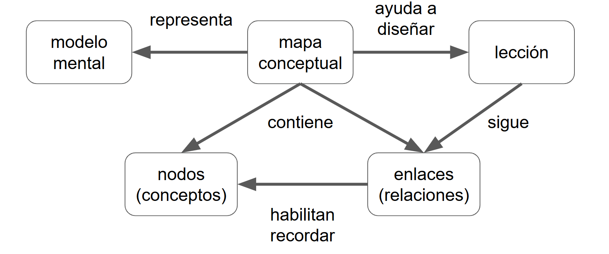
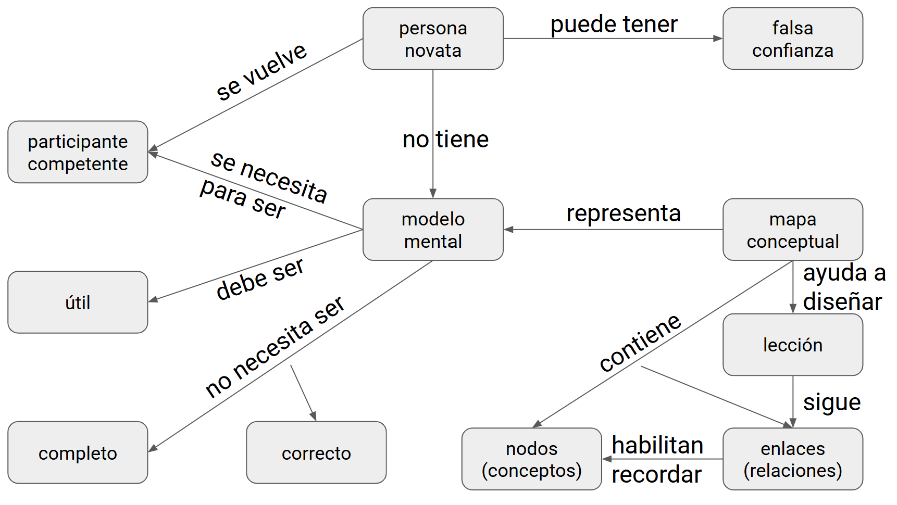
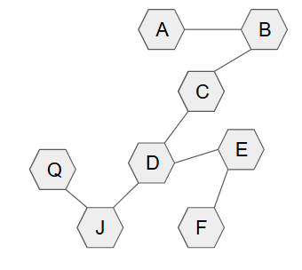
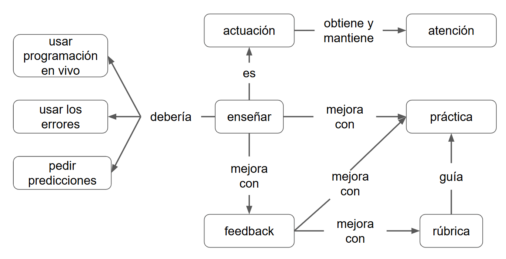

Content from Introducción
Última actualización: 2025-11-05 | Mejora esta página
Hoja de ruta
Preguntas
- ¿Que vamos a aprender?
- ¿A quién estamos tratando de ayudar?
Objetivos
- Explicar sobre el entrenamiento, los objetivos y motivaciones.
- Demostrar cómo describir a las personas que se está tratando de ayudar.
Entrenamiento docente
Les damos la bienvenida al entrenamiento docente adaptado por MetaDocencia, una versión creada a partir del curso “Train the Trainers” de The Carpentries.
Este curso brindará a los nuevos capacitadores conocimientos, habilidades, orientación y consejos para desarrollar y brindar capacitación. Exploraremos una variedad de métodos para permitir y fomentar el aprendizaje, examinar los requisitos para un curso exitoso y obtener apropiada devolución
Objetivos:
- Brindar orientación sobre técnicas de capacitación general y el uso apropiado de métodos basados en las necesidades del alumno, incluidos algunos “DOs” y “DONT’s” generales para una capacitación exitosa.
- Proporcionar un marco para un diseño curricular exitoso y un mayor desarrollo, para permitir a los capacitadores construir un curso apropiado para las necesidades de sus alumnos.
Motivación
- Construir lecciones más efectivas
- Aplicar prácticas basadas en evidencia
- priorizar la práctica y la retroalimentación
- Generar un ambiente de aprendizaje positivo
Hoy sabemos mucho sobre cómo aprenden las personas y cómo facilitar ese aprendizaje. Sin embargo, ese conocimiento no siempre llega a quienes enseñan. Es probable que al terminar la escuela secundaria hayan aprendido qué son los gérmenes, qué función cumplen las vitaminas o cómo nace un bebé. Pero quizás no tuvieron la oportunidad de aprender aspectos igual de fundamentales sobre los procesos de enseñanza y aprendizaje.
Conocer unos pocos de estos conceptos básicos ayuda a construir lecciones más efectivas en menos tiempo y con menos esfuerzo. A enseñar también se aprende, sobre todo a través de la práctica y la retroalimentación que recibimos de quienes están en nuestras clases.
Punto de Partida
Nuestra idea clave es que el aprendizaje es tanto una actividad cognitiva como social. El aprendizaje ocurre cuando nuestro cerebro almacena hechos y procedimientos de manera que le permiten recordar y aplicar lo que necesita cuando lo necesita. También ocurre en un entorno social: se aprende con otras personas, y los objetivos, motivaciones y criterios para el éxito se determinan con esas y por esas personas. Otra de nuestras ideas clave es que tanto la enseñanza como el aprendizaje deben ser activos: una persona que recita una lección a sus estudiantes que simplemente escuchan es probablemente menos efectiva que una lección donde quienes aprenden participan.
Paramédicas y Paramédicos Educacionales
Otra cosa que debemos dejar en claro es que no estamos tratando de convertirles en expertos en educación, no queremos convertiles en médicas o médicos. Somos más como paramédicas y paramédicos educacionales: nos enfocamos en brindar un servicio de respuesta primaria a las personas que necesitan ayuda inmediata y que pueden no tener tiempo o interés para completar todo lo que hay para saber sobre un tema. Ninguno de los dos aspectos es mejor que el otro: sirven a diferentes propósitos.
El público en general tiene conocimientos básicos de salud y medicina, pero no tiene los conocimientos equivalentes sobre enseñanza y aprendizaje. Una persona entrenada posee los dos. Nosotros éramos como ustedes en este momento, pertenecíamos a ese grupo de gente sin entrenamiento en conceptos básicos de educación, pero ahora somos personas entrenadas y es en lo que van a convertirse cuando terminen este curso. Una persona entrenada puede: crear mejores lecciones, usar prácticas basadas en evidencia, mejorar usando retroalimentación y generar un ambiente de aprendizaje positivo. La enseñanza y el aprendizaje involucran procesos cognitivos y sociales, y se realizan mejor si se hacen de manera activa.
Personas
El primer paso para crear cualquier clase de lección es descubrir a quienes están tratando de ayudar. Hacer esto también es una buena herramienta para romper el hielo, así que vamos a presentarles a Ana.
Conoce a Ana:
Sus Antecedentes
Estos son los antecedentes de Ana: solo algunos datos que ayudan a personalizarla.
- Nacida y criada en Caracas
- Se mudó a Buenos Aires para hacer un doctorado en genética
- Le gusta el mate, pero aún no se acostumbra a tomarlo amargo
Punto de Partida
Aquí está Ana en este momento. No es una lista de palabras clave, porque una frase como “conocimiento básico de un lenguaje de programación” significa cosas muy diferentes para diferentes personas. En cambio, está escrito como una descripción de una persona en particular, y confiamos en que quien lee interpolará toda la información que no está allí.
- Analiza datos con Excel desde hace casi diez años
- Hizo un taller de un día intensivo de R en una conferencia
- Intentó aprender Git por su cuenta una vez, lo encontró frustrante
Necesidades
Esto es lo que Ana piensa que quiere aprender. Lo más importante de esta lista es que está escrita desde su punto de vista: no es lo que ustedes, con más conocimiento del tema, saben que necesita; es lo que ella, con el conocimiento que tiene ahora, está buscando.
- Va a hacer 300 experimentos en los próximos seis meses
- No quiere hacer todos los análisis a mano
- Quiere mejores tablas para su tesis que las que puede hacer en Excel
Consideraciones Especiales
La parte final de sus estudiantes tipo describe cualquier otra cosa que deba tenerse en cuenta. ¿Tienen problemas de audición? ¿Necesitan terminar a las 6:00 pm puntual porque cuidan menores o personas mayores? ¿Van a usar una máquina bloqueada que no les permitirá instalar software? Cualquiera de estas cosas podría desviar la enseñanza, por lo que es mejor pensar en ellas por adelantado.
- Muy incómoda hablando delante de un grupo
Preguntas para contestar en el chat
¿Qué se imaginan? ¿Ana usa redes sociales?
- Si piensan que sí, ¿qué red usa?
- Si piensan que no, ¿por qué no?
Contesten brevemente en el chat.
Estudiante o Persona Tipo
Lo que acabamos de crear se llama estudiante tipo. Cualquiera que enseñe, o cualquier equipo que enseñe junto, debería crear un puñado de estudiantes tipo que describan a las personas que se está tratando de ayudar. Estos casos típicos les recordarán una de las reglas más importantes para enseñar:
No eres tu estudiante.
Los aspectos a describir, los podemos resumir en:
- Antecedentes generales
- Experiencia relevante
- Necesidades percibidas
- Consideraciones especiales
Explíquenlo En Sus Términos
Una vez que saben a quién están tratando de ayudar, pueden descubrir cómo su capacitación les ayudará a satisfacer sus necesidades y cómo explicarlo de una manera que les puedan entender. Es una única línea en el catálogo de muchos otros cursos lo que llamará la atención de quienes se formen con ustedes y que les ayudará a determinar si les pueden ayudar.
“Esta introducción práctica de una semana a la ciencia de datos mostrará cómo cargar, limpiar, explorar, visualizar y analizar datos tabulares en forma reproducible.”
Personas Tipo de MetaDocencia
Juan Pablo | Experto tecnológico; piensa que sus clases son inmejorables |
Karina | Usuaria inicial de tecnología con estudios de pedagogía universitaria |
Emilia | Bibliotecaria y ahora diseñadora web en una pequeña empresa |
Samira | Programadora profesional, quiere dar clases pero no tiene experiencia |
David | Estudiante de robótica, le gustaría ser docente |
Gerardo | Docente de ciencias de la computación, quiere mejorar sus clases |
Más detalles en https://www.metadocencia.org/personas/ y https://teachtogether.tech/es/index.html#s:intro-audience
Ejercicio: crear una persona tipo
Tener en cuenta: - Antecedentes generales - Punto de partida - Necesidades - Consideraciones especiales
Expliquen cómo pueden ayudarla.
- A enseñar se aprende de manera activa
- Las personas o estudiantes tipo describen a quienes se está tratando de ayudar
Content from Modelos mentales
Última actualización: 2025-11-05 | Mejora esta página
Hoja de ruta
Preguntas
- ¿Cómo aprenden las personas?
- ¿Cómo ayudar a personas novatas?
Objetivos
- Explicar e identificar los modelos mentales de personas novatas,
competentes y expertas
- Demostrar cómo ayudar a construir nuevos modelos mentales
- Comprender la progresión cognitiva para aplicar recursos eficientes en tus lecciones
Progresión Cognitiva
A partir de la década de los 80, Patricia Benner comenzó a estudiar la forma en que las personas que practican la enfermería pasan de ser novatas a expertas. Lo que encontró, y lo que se ha replicado al observar otros grupos, es que la mayoría de las personas pasan por una serie bastante predecible de transiciones cognitivas. No solo acumulan más conocimiento: en realidad comienzan a pensar en los problemas de maneras muy diferentes.
Benner identificó cinco etapas:
- Persona novata
- Principiante avanzada
- Competente
- Competente avanzada
- Persona experta
Pero para nuestros propósitos, vamos a simplificar el modelo a tres:
- Persona novata
Principiante avanzada- Competente
Competente avanzada- Persona experta
Ejercicio: ¿Cuáles son los síntomas de que una persona es novata?
Tómense un par de minutos y escriban en el documento compartido algunos síntomas de que alguien es una persona novata. No se preocupen aún por el “por qué”; en cambio, enumeren las cosas que hacen o dicen que les llevan a clasificarlas como un cocinero novato, un conductor novato, una oradora novata del esperanto o una programadora novata.
Personas novatas
Aquí hay algunas respuestas comunes a la pregunta:
¿Cuáles son los síntomas de que una persona es novata?
- Hacen las cosas de memoria
- Hacen preguntas sin sentido
- Usan términos incorrectos
- No diferencian qué es relevante
- Les falta confianza
Antes de explorar lo que tienen en común, necesitamos eliminar una.
- Hacen las cosas de memoria
- Hacen preguntas sin sentido
- Usan términos incorrectos
- No diferencian qué es relevante
Les falta confianza
Algunos de los síntomas de ser una persona novata son que haces las cosas de memoria: tienes una receta que sigues pero no entiendes el por qué esos pasos, por qué están en ese orden o qué hacer si algo sale mal.
Los novatos a menudo hacen preguntas sin sentido como “¿De qué color es la base de datos?”
Un tercer síntoma es que los novatos con frecuencia no pueden decir qué es relevante y qué no lo es; es muy común, por ejemplo, ver a las personas programadoras novatas poner sus propios nombres de variables o nombres de archivos en consultas en un sitio como Stack Overflow. Todavía no tienen una clara distinción en sus cabezas entre lo que pertenece al lenguaje y lo que es específico de su programa.
Una cosa que no es un síntoma confiable de ser una persona novata es la confianza o la falta de confianza. Esto se debe a algo llamado efecto Dunning-Kruger: cuanto menos sepa sobre un tema, menos precisa será tu estimación de cuánto sabes y cuánto no sabes.
![El gráfico muestra una curva amarilla que representa el efecto Dunning-Kruger: en el eje horizontal se indica el “Conocimiento del área”, de poco a mucho, y en el vertical la “Confianza”, de poca a mucha. La línea empieza en el extremo inferior izquierdo con un punto etiquetado “¿Eh?”, asciende rápidamente hasta un pico llamado “Ya sé todo”, desciende atravesando “Esto es más de lo que pensaba” y toca fondo en “Nunca voy a entender esto”; a partir de allí sube gradualmente pasando por “Empieza a tener sentido” y llega al extremo superior derecho en “Créeme, es complicado”. Cada fase está marcada con un punto rojo que señala cómo la confianza varía a medida que crece el conocimiento.](fig/efecto-Dunning-Kruger.png)
Características de una Persona Novata
Lo que hace a alguien una persona novata es que aún no tiene un modelo mental del problema: no sabe cuáles son las piezas importantes o cómo se relacionan. Por lo tanto, tienen que seguir pasos sin comprender por qué, o tomar prestados conceptos de otros dominios que entienden y esperar que las analogías se mantengan.
Un modelo mental
Aquí hay un ejemplo de lo que queremos decir con un modelo mental.
En la clase de ciencias de la escuela secundaria, probablemente les enseñaron que los átomos son bolas de colores brillantes conectadas por resortes.
Ninguna de esas cosas es realmente cierta, pero es un modelo útil para comprender las cosas que las personas quieren entender en esa etapa de su desarrollo y para resolver los problemas que quieren resolver.
Otro modelo mental puede ser:
Una computadora tiene una CPU, algo de RAM y un disco duro.
Es realmente útil para explicar el rendimiento de la computadora a principiantes, pero de nuevo, todo esto es falso. Tu computadora probablemente tenga varios procesadores, hay al menos tres niveles de memoria y su disco duro probablemente no sea una única unidad. Sin embargo, nada de eso es importante para la mayoría de quienes programan. El modelo les permite hacer predicciones sobre las que pueden actuar y arreglar las cosas que salen mal.
Versión actual, orientada a programación
Cómo Ayudar Personas Novatas
Ayúdenlas a construir un modelo mental
Hasta que alguien tiene un modelo mental, no tiene dónde poner información y no puede decir qué partes son útiles y cuándo son útiles. Por lo tanto, el objetivo al enseñarle a principiantes es ayudarles a construir un modelo mental.
Por ejemplo, la introducción de Software Carpentry al shell de Unix cubre 15 comandos en 3 horas. Es solo un comando cada 12 minutos. Esto suena a un ritmo muy lento hasta que te das cuenta de que el objetivo es realmente ayudarlos a comprender:
- ¿Qué es un camino (path)?
- ¿Cuál es la diferencia entre una ruta absoluta y una ruta relativa?
- ¿Qué es un directorio de inicio?
- ¿Qué son las flags de un comando?
- ¿Qué es un pipe?
- ¿Qué es el historial y cómo se usa?
- ¿Qué es un comodín?
Hasta que tu audiencia sepa esto, nada más tendrá sentido.
Propuesta
Cómo Ayudar Personas Novatas
Ayúdenlas a construir un modelo mental
Hasta que alguien tiene un modelo mental, no tiene dónde poner información y no puede decir qué partes son útiles y cuándo son útiles. Por lo tanto, el objetivo al enseñarle a principiantes es ayudarles a construir un modelo mental.
Por ejemplo, si enseñamos a armar una huerta, no se trata solo de decir “plantá esto acá”. Necesitamos que quienes aprenden comprendan:
- Qué necesita una planta para crecer: luz, agua, tierra y tiempo.
- Cuáles son las estaciones más adecuadas para cada cultivo.
- Qué diferencia hay entre sembrar en almácigo y en tierra directa.
- Qué tipo de suelo conviene usar y cómo prepararlo.
- Cómo se asocian algunas plantas entre sí y cuáles es mejor mantener separadas.
- Cómo se reconocen las plagas más comunes y qué hacer sin dañar la huerta.
Sin estas nociones básicas, la experiencia puede volverse frustrante. Pero con un modelo mental claro, cuidar una huerta se vuelve una tarea más comprensible, placentera y posible de sostener en el tiempo.
Cómo saber que fue un trabajo exitoso
Pueden saber cuándo las personas tienen un modelo mental utilizable cuando pueden leer el manual o, en estos días, cuando pueden escribir la búsqueda correcta en su navegador y reconocer una respuesta útil cuando aparece.
Mapas mentales
Entonces, ¿cómo hacemos esto? El primer paso para cualquier lección es descubrir qué modelo mental quieres que tengan, y la mejor manera de hacerlo es dibujar un mapa conceptual.
Por ejemplo, podemos analizar el mapa mental de una usuaria de una biblioteca (según lo dibujado por Amy Hodge de la Universidad de Stanford).

Y aquí está el modelo mental para la dirección de la biblioteca:
 {alt=“Mapa
conceptual sobre la dirección de una biblioteca: el Gobierno de la
ciudad controla y paga por el Presupuesto; este paga por Programas y
materiales, Personal e Instalaciones. El personal trabaja en las
instalaciones y está gobernado por Sindicatos. Las Socias/os visitan las
instalaciones y participan en los programas, que ocurren en dichas
instalaciones.”}
{alt=“Mapa
conceptual sobre la dirección de una biblioteca: el Gobierno de la
ciudad controla y paga por el Presupuesto; este paga por Programas y
materiales, Personal e Instalaciones. El personal trabaja en las
instalaciones y está gobernado por Sindicatos. Las Socias/os visitan las
instalaciones y participan en los programas, que ocurren en dichas
instalaciones.”}
Aquí hay un mapa conceptual que muestra nuestro modelo mental de los mapas conceptuales.
{alt=“Diagrama meta-conceptual: un ‘mapa conceptual’ ‘representa’ un ‘modelo mental’, ‘contiene’ ‘nodos (conceptos)’ y ‘enlaces (relaciones)’, los cuales ‘habilitan recordar’. El mapa conceptual también ‘ayuda a diseñar’ una ‘lección’, que a su vez ‘sigue’ los enlaces.”}
Hay muchas formas de dibujar el modelo mental de alguien. Este se parece más a un árbol de decisión…
 {alt=“Mapa conceptual que
parte del nodo ‘manzana’ con la relación ‘puede ser’ hacia tres colores:
‘roja’, ‘amarilla’ y ‘verde’. De ‘roja’ y ‘amarilla’ sale la relación
‘está’ hacia ‘madura’; de ‘verde’ hacia ‘inmadura’. Otro camino señala
que una manzana ‘puede estar’ madura ‘a menos que sea’ ‘Granny Smith’,
conectando ese cultivar como excepción.”}
{alt=“Mapa conceptual que
parte del nodo ‘manzana’ con la relación ‘puede ser’ hacia tres colores:
‘roja’, ‘amarilla’ y ‘verde’. De ‘roja’ y ‘amarilla’ sale la relación
‘está’ hacia ‘madura’; de ‘verde’ hacia ‘inmadura’. Otro camino señala
que una manzana ‘puede estar’ madura ‘a menos que sea’ ‘Granny Smith’,
conectando ese cultivar como excepción.”}
Alternativas
… y, a veces, un diagrama o Diagrama de Venn es más preciso. Lo que hacen los mapas conceptuales que la mayoría de los otros esquemas no hacen es etiquetar las relaciones. Esos enlaces son cómo pasamos del conocimiento que tenemos al conocimiento que necesitamos. Si no les dicen a sus estudiantes cómo están conectados dos hechos, probablemente no podrán recordarlos.
 {alt=“Diagrama de Venn con círculos
anidados que aclaran la geografía política de las islas británicas: el
contorno mayor es ‘British Isles’; dentro, círculos para ‘United
Kingdom’ y ‘Ireland’. En el Reino Unido se incluye ‘Great Britain’, que
contiene ‘England’, ‘Scotland’ y ‘Wales’. ‘Northern Ireland’ comparte
intersección con Irlanda. Círculos aparte muestran ‘Isle of Man’ y, al
sudeste, ‘Channel Islands’ con ‘Guernsey’ y ‘Jersey’.”}
{alt=“Diagrama de Venn con círculos
anidados que aclaran la geografía política de las islas británicas: el
contorno mayor es ‘British Isles’; dentro, círculos para ‘United
Kingdom’ y ‘Ireland’. En el Reino Unido se incluye ‘Great Britain’, que
contiene ‘England’, ‘Scotland’ y ‘Wales’. ‘Northern Ireland’ comparte
intersección con Irlanda. Círculos aparte muestran ‘Isle of Man’ y, al
sudeste, ‘Channel Islands’ con ‘Guernsey’ y ‘Jersey’.”}
 {alt=“Flujo de trabajo de ciencia de
datos dentro de un rectángulo grande titulado ‘Programar’. Una banda
gris interna llamada ‘Comprender’ encadena las etapas ‘Importar →
Ordenar → Transformar’; de Transformar surgen flechas hacia ‘Visualizar’
y ‘Modelar’ que se retroalimentan entre sí, y una flecha de salida
apunta a ‘Comunicar’.”}
{alt=“Flujo de trabajo de ciencia de
datos dentro de un rectángulo grande titulado ‘Programar’. Una banda
gris interna llamada ‘Comprender’ encadena las etapas ‘Importar →
Ordenar → Transformar’; de Transformar surgen flechas hacia ‘Visualizar’
y ‘Modelar’ que se retroalimentan entre sí, y una flecha de salida
apunta a ‘Comunicar’.”}
Uso en Diseño de Lecciones
Dibujar un mapa conceptual antes de comenzar a escribir una lección ayuda a definir los objetivos de la lección. También ayuda a concentrarse en el contenido antes de preocuparse por el orden, y nos recuerda enfatizar las relaciones entre las cosas además de las cosas en sí mismas. Finalmente, es una buena manera de comunicarse con sus pares: lo más probable es que si enseñan con alguien que tiene modelos mentales muy diferentes a los de ustedes para un tema, les resultará difícil enseñarlo conjuntamente.
Más adelante veremos cómo usar mapas conceptuales al enseñar o evaluar una lección.
Ejercicio: Mapa mental
En grupos, dibujen un mapa conceptual de algo que puedan explicar en 2 minutos. Por ejemplo: - Hacer pan - Datos tabulares - Sumar 2+2
Cuando hayan terminado, cárguenlo al documento compartido.
Aquí hay un posible mapa conceptual para la fotosíntesis. El de ustedes podría ser muy diferente: podrían enfatizar diferentes elementos o estar pensando en ello desde el punto de vista de una audiencia diferente. Lo que esto hace es externalizar el proceso cognitivo: deja al descubierto el pensamiento de ustedes donde otras personas (y ustedes) pueden verlo.
 {alt=“Mapa conceptual de
síntesis sobre modelos mentales: una ‘persona novata’ no tiene ‘modelo
mental’, puede tener ‘falsa confianza’ y se vuelve ‘participante
competente’ cuando desarrolla uno. El ‘modelo mental’ representa un
‘mapa conceptual’, que contiene ‘nodos (conceptos)’ y ‘enlaces
(relaciones)’ que habilitan recordar y ayuda a diseñar una ‘lección’ que
sigue esos enlaces. Para que sea útil, el modelo mental debe ser ‘útil’
pero no necesita ser completamente ‘correcto’ ni ‘completo’; además, se
necesita para ser un participante competente.”}
{alt=“Mapa conceptual de
síntesis sobre modelos mentales: una ‘persona novata’ no tiene ‘modelo
mental’, puede tener ‘falsa confianza’ y se vuelve ‘participante
competente’ cuando desarrolla uno. El ‘modelo mental’ representa un
‘mapa conceptual’, que contiene ‘nodos (conceptos)’ y ‘enlaces
(relaciones)’ que habilitan recordar y ayuda a diseñar una ‘lección’ que
sigue esos enlaces. Para que sea útil, el modelo mental debe ser ‘útil’
pero no necesita ser completamente ‘correcto’ ni ‘completo’; además, se
necesita para ser un participante competente.”}
Resumen Hasta Aquí
Este mapa conceptual resume todo lo visto hasta aquí. El mapa conceptual presenta los conceptos y relaciones principales entre los conceptos pertinentes a los modelos mentales.
Los modelos mentales deben ser útiles y no necesitan ser completos o correctos. Cuando una persona novata (que puede tener una falsa confianza) desarrolla un modelo mental, se convierte en un/una practicante competente.
Los mapas conceptuales se usan para representar un modelo mental por medio de nodos que representan conceptos y enlaces que representan relaciones. Las relaciones habilitan a recordar los conceptos. Estos mapas también ayudan a diseñar una lección siguiendo las relaciones.
{alt=“Flujo de trabajo de ciencia de datos dentro de un rectángulo grande titulado ‘Programar’. Una banda gris interna llamada ‘Comprender’ encadena las etapas ‘Importar → Ordenar → Transformar’; de Transformar surgen flechas hacia ‘Visualizar’ y ‘Modelar’ que se retroalimentan entre sí, y una flecha de salida apunta a ‘Comunicar’.”}
Progresión Cognitiva
Los mapas conceptuales también ayudan a explicar las diferencias entre los mapas mentales de las personas novatas, competentes y expertas. Por supuesto que nuestro cerebro no se parece en nada a conceptos conectados en un grafo, pero este esquema nos va a ayudar a describir visualmente los distintos niveles de conocimiento de un tema.
Las personas novatas no tienen muchas conexiones entre conceptos.
 {alt=“Red fragmentada de
hexágonos: A conecta solo con C; B y D están aislados sin conexiones; E
se enlaza únicamente con F, y F solo con E. Existen escasos vínculos y
la mayoría de los nodos quedan separados unos de otros.”}
{alt=“Red fragmentada de
hexágonos: A conecta solo con C; B y D están aislados sin conexiones; E
se enlaza únicamente con F, y F solo con E. Existen escasos vínculos y
la mayoría de los nodos quedan separados unos de otros.”}
Las personas competentes tienen más conceptos y más conexiones entre los conceptos, pero pueden tomar varios pasos para pasar de lo que saben a lo que necesitan resolver.
{alt=“Red de hexágonos con conexiones selectivas: A se enlaza con B mediante una arista; B se une a C, que a su vez conecta con D. El nodo D enlaza con C, E y J; E conecta con D y F; F se une a E y a J; J enlaza con D y con Q. Los grupos están relacionados por algunos puentes, pero la red no es completamente densa.”}
Las personas expertas tienen muchas más conexiones, por lo que su camino es más corto, de hecho, tan corto que a menudo pueden saltar de principio a fin en un solo paso. Las personas expertas pueden no tener más conceptos que una persona competente; la diferencia importante es la cantidad de conexiones.
Esto también lleva al punto ciego de la persona experta: no puede explicar su razonamiento porque no hay razonamiento.
 {alt=“Diagrama en forma de
colmena que muestra seis hexágonos etiquetados A – F densamente
interconectados dentro de un contorno envolvente. El hexágono C ocupa el
centro y se conecta con todos los demás; A y B están arriba unidos entre
sí y con C; D y E aparecen a los costados conectados entre sí, con C y
con F; F se ubica abajo y enlaza con C, D y E. El resultado es una malla
cerrada con múltiples caminos redundantes.”}
{alt=“Diagrama en forma de
colmena que muestra seis hexágonos etiquetados A – F densamente
interconectados dentro de un contorno envolvente. El hexágono C ocupa el
centro y se conecta con todos los demás; A y B están arriba unidos entre
sí y con C; D y E aparecen a los costados conectados entre sí, con C y
con F; F se ubica abajo y enlaza con C, D y E. El resultado es una malla
cerrada con múltiples caminos redundantes.”}
No Eres Tus Estudiantes
Punto ciego de la persona experta
Esta es una de las 10 pautas de Greg Wilson que nos gusta retomar en MetaDocencia: “No eres tus estudiantes”.
Así que mucha atención al punto ciego de la persona experta. Este punto ciego, es decir, saber la respuesta a un problema pero no saber cómo se llegó a ella, es uno de los motivos por los cuales no siempre una persona experta es la mejor para enseñar un tema. Las personas expertas se pueden reentrenar para ver el mundo como una persona novata, pero esto toma trabajo. Las personas competentes tienen mucho más fresco en la memoria cómo es entrar a un tema por primera vez.
Cuiden la forma en que hablan y el humor
Otra de las cuestiones que hay que considerar es la forma en que hablamos y el humor que usamos. Tanto la forma de comunicarse como el humor como la inclusión de memes y chistes, hacen al aspecto social de la enseñanza y sus usos penden de un fino equilibrio. La inclusión de un lenguaje acorde al público y de humor acorde a sus asistentes suma mucho desde lo social y puede motivar y ayudar a aprender. Sin embargo, hay palabras o formas de hablar que matan la motivación.
Ejercicio: Pregunta para Contestar en el Chat
Tipeen en el chat: 1. Frase corta/palabra que puede tener un efecto desmotivador 2. Frase corta/palabra que podría reemplazarla
Estudiantes de distintos niveles
Una consulta frecuente de este curso, una vez que charlamos sobre los distintos niveles de progresión cognitiva, es cómo diseñar una clase cuando sus estudiantes tienen distintos niveles.
El primer consejo sobre este tema es tratar de evitarlo, ya que todas las propuestas que siguen requieren trabajo adicional.
Si no se puede evitar, se podría diseñar una clase contemplando enseñanza para distintos grupos según su nivel.
Otra opción es identificar a las personas más avanzadas y que estas personas ayuden a sus colegas.
Otra opción es la instrucción por pares en pequeños grupos, armando los grupos de manera tal que se mezclen los niveles. Finalmente, se puede hacer una propuesta de reunirse a estudiar permitiendo que cada estudiante trabaje a su propio ritmo en forma individual. Esta opción requerirá propuestas de trabajo diferentes para los distintos niveles y un enfoque activo. En una clase de programación, podría ser la resolución de ejercicios en el aula de distintos niveles y que el personal docente a cargo esté disponible para consultas.
- Nuestro objetivo al enseñar a personas novatas es ayudarlas a construir modelos mentales útiles.
- Explorar nuestros propios modelos mentales puede ayudarnos a prepararnos para transmitirlos.
- Las personas novatas no tienen muchas conexiones entre conceptos.
- Las personas competentes tienen más conceptos y más conexiones entre los conceptos, pero pueden tomar varios pasos para pasar de lo que saben a lo que necesitan resolver.
- Las personas expertas pueden no tener más conceptos que una persona competente, la diferencia importante es la cantidad de conexiones.
Content from Carga cognitiva
Última actualización: 2025-11-05 | Mejora esta página
Hoja de ruta
Preguntas
¿Qué es la carga cognitiva y cómo afecta el aprendizaje?
¿Cómo podemos diseñar la instrucción para trabajar con, en lugar de contra, las limitaciones de la memoria?
Objetivos
- Recordar el límite cuantitativo de la memoria humana.
- Distinguir la carga cognitiva deseable de la indeseable.
- Evaluar la carga cognitiva asociada a una tarea de aprendizaje.
¿Qué Está Pasando Ahí Adentro?
Hemos estado hablando de modelos mentales como si fueran cosas reales, pero ¿qué sucede realmente en el cerebro de nuestra audiencia cuando está aprendiendo? La respuesta corta es que no lo sabemos; la respuesta más larga es que sabemos mucho más de lo que solíamos y tenemos algunos modelos bastante buenos que pueden ayudarnos a diseñar y brindar lecciones de manera más efectiva.
![Esquema que presenta dos recuadros principales, uno llamado memoria de largo plazo y otro memoria de corto plazo. El recuadro memoria de largo plazo contiene un modelo mental de cajas y flechas que se relacionan entre sí. En el recuadro memoria de corto plazo, hay una caja representando al canal visual y otra caja representando al canal verbal. Desde ambas cajas salen una flecha hacia un signo de integración doble desde el cual sale una relación llamada codificar hacia la memoria de largo plazo. Desde la memoria de largo plazo sale una relación llamada recuperar hacia la memoria de corto plazo. Las imágenes tomadas a partir de los ojos y el habla registrada por medio de los oídos están por fuera de los dos recuadros principales y se relacionan con los canales visuales y verbales de la memoria a corto plazo, respectivamente.](fig/arquitectura-cognitiva.png)
Este es un modelo simplificado de la arquitectura cognitiva humana. Están pasando muchas cosas aquí, así que vamos a estudiarlas por partes.
Dos Formas de Memoria

El núcleo de este modelo es la distinción entre dos tipos de memoria. La memoria a largo plazo sería como el sótano o la baulera: almacena una gran cantidad de información de manera más o menos permanente, aunque nuestra conciencia no pueda acceder a ella directamente. Allí guardamos, por ejemplo, los recuerdos de un cumpleaños de segundo grado o nuestro número de teléfono.
En cambio, la memoria a corto plazo, también llamada memoria de trabajo, funciona como el escritorio: es el espacio donde colocamos temporalmente la información que necesitamos tener a mano para pensar, razonar o resolver una tarea.
Cuando necesitamos acceder a un conocimiento o recuerdo, nuestro cerebro lo recupera de la memoria a largo plazo y lo lleva a la memoria de trabajo para poder usarlo. De manera inversa, la información nueva que llega a la memoria de trabajo debe codificarse, es decir, transformarse en una representación estable, para almacenarse en la memoria a largo plazo. Si esa información no llega a codificarse ni a integrarse en la memoria a largo plazo, no podrá recordarse más adelante y, en sentido estricto, no se habrá aprendido.

La información ingresa a la memoria a corto plazo principalmente a través de su canal verbal (para el habla) y el canal visual (para las imágenes). Un modelo más completo también incluiría el sentido del tacto y la capacidad para oler y saborear cosas, pero los ignoraremos por ahora.
La última parte de esta imagen es el trabajo que hace nuestro cerebro para integrar la información que recibe a través de diferentes canales. Si escuchamos y vemos cosas al mismo tiempo, nuestro cerebro trata de integrarlas correlacionándolas y almacenándolas juntas. Como veremos en unos momentos, eso puede ayudar o perjudicar el aprendizaje.

Tal como lo hemos representado hasta ahora, el diagrama otorga igual peso a los canales verbal y visual. Sin embargo, en la práctica, la mayoría de las personas procesan mucha más información, y con mayor rapidez, a través del canal visual.
Pregunta para contestar en el chat:
¿Crees que incluir imágenes o recursos visuales junto con una explicación oral ayuda a comprender y recordar mejor la información? ¿Por qué piensas que puede suceder eso?
La Teoría del Aprendizaje Multimedia de Richard Mayer (Cognitive Theory of Multimedia Learning) sostiene que las personas aprenden mejor cuando la información se presenta de forma combinada entre palabras e imágenes, en lugar de sólo mediante texto o discurso. Se basa en tres supuestos cognitivos:
- Doble canal de procesamiento, que distingue entre un canal visual/pictórico y otro auditivo/verbal para gestionar la información entrante;
- Capacidad limitada de la memoria de trabajo, que impone un umbral a la cantidad de información que puede procesarse simultáneamente; y
- Procesamiento activo, según el cual el aprendizaje significativo requiere que el estudiante seleccione, organice e integre la información nueva con los conocimientos previos.
Cuando los estímulos visuales y auditivos (por ejemplo, narraciones, explicaciones verbales) se coordinan temporal y conceptualmente, ambos canales colaboran en la codificación dual de la información, lo que fortalece la comprensión y la retención a largo plazo. Esta integración es especialmente eficaz cuando el diseño de la lección evita sobrecargar la memoria de trabajo.
Leer Es Raro
Este modelo también explica por qué resulta menos efectivo presentar información redundante en forma de texto y habla simultáneamente, como leer en voz alta una diapositiva con mucho texto o proyectar subtítulos que repiten exactamente lo que dice quien presenta. El texto ingresa primero por el canal visual, pero luego se procesa también a través del canal verbal. Nuestro cerebro no puede evitar intentar conciliar ambos flujos de información, uno recibido por los ojos y otro por los oídos. Esa comparación constante entre lo que se lee y lo que se escucha exige un esfuerzo mental adicional, porque el cerebro busca verificar que ambos mensajes coincidan. Al hacerlo, se reduce la capacidad disponible para codificar y almacenar la información de manera significativa.
Por lo tanto, el aprendizaje mejora cuando la información se presenta de manera complementaria a través de los canales visual y verbal, ya que cada uno procesa tipos distintos de estímulos y se refuerzan mutuamente. En cambio, disminuye cuando la misma información se repite simultáneamente por ambos canales porque ocupa recursos cognitivos innecesarios. Este fenómeno se conoce como efecto de redundancia [Maye2003].
Tres escenarios ilustran este principio:
- Habla e imágenes: se integran con facilidad y favorecen el aprendizaje.
- Texto e imágenes: requieren un esfuerzo adicional para convertir el texto en una representación verbal, pero pueden funcionar bien.
- Habla, texto e imágenes: generan la mayor demanda cognitiva (salvo en contextos en que el texto cumple una función de apoyo, como los subtítulos en otro idioma).
Carga Cognitiva
El “esfuerzo mental” mencionado en el punto anterior hace referencia a un concepto central en educación, el de Carga Cognitiva. El concepto de carga cognitiva se refiere a la cantidad de recursos mentales que una persona necesita utilizar para procesar, comprender y almacenar información mientras aprende o realiza una tarea. Surge de la Teoría de la Carga Cognitiva (Sweller, 1988), basada en la idea de que la memoria de trabajo humana tiene una capacidad limitada: sólo puede manejar una cantidad reducida de información a la vez. Cuando la demanda mental de una tarea supera esa capacidad, el aprendizaje se vuelve ineficiente o incluso se interrumpe.
Por eso, en el diseño de materiales y experiencias educativas, es fundamental regular la carga cognitiva: no se trata de eliminar el esfuerzo, sino de dirigirlo hacia lo que realmente favorece el aprendizaje. El objetivo no es que la tarea sea “fácil”, sino que el esfuerzo mental esté bien invertido.
Existen tres tipos principales de carga cognitiva.
La carga cognitiva intrínseca es la carga inherente al contenido que queremos enseñar. Es lo esencial de la tarea: por ejemplo, entender un concepto nuevo o seguir una receta. Está determinada por la complejidad del material y por el nivel de conocimiento previo sobre el tema que tiene el estudiante. Esta carga no se puede eliminar, pero sí se puede gestionar, dividiendo el contenido en pasos más pequeños o activando conocimientos previos que reduzcan la dificultad percibida.
La carga cognitiva pertinente es el esfuerzo mental adicional que implica procesar la información de manera profunda, es decir que ayuda a aprender mejor. Implica cosas como hacer conexiones entre ideas, organizar conceptos, elaborar ejemplos propios o aplicar estrategias de resolución. A diferencia de la carga intrínseca, esta carga no es inherente a la tarea pero es deseable, porque está directamente relacionada con la construcción de esquemas mentales estables en la memoria a largo plazo. Fomentar esta carga implica promover la reflexión, la autoexplicación y la práctica deliberada.
La carga cognitiva extrínseca no contribuye al aprendizaje y puede surgir de factores externos como distracciones ambientales o barreras tecnológicas, pero también de lecciones diseñadas de manera poco clara o desordenadas, con saltos lógicos, términos no explicados o exceso de información. Es todo lo que distrae o dificulta el aprendizaje sin aportar valor.
Para explicar las diferencias, imaginemos que están aprendiendo a hablar francés y que se les ha pedido que traduzcan esta oración:
¿Cómo está tu rodilla?
Supongamos que les damos las palabras que necesitan. Tienen que hacer dos cosas: recordar algunas palabras y organizarlas gramaticalmente, de modo que todo lo que tienen que hacer es organizarlas en el orden correcto.
genou
comment
ton
va
Hicimos el problema mucho más simple dándoles el vocabulario y permitiéndoles enfocar su atención en la gramática.
comment va ton genou
Ejercicio: Tipos de carga
En el documento compartido, decidan qué tipo de carga es cada uno de los siguientes aspectos del ejercicio anterior (“Cómo está tu rodilla” en francés).
- Orden de las palabras
- Vocabulario
- Tipografía
Agreguen al lado de cada aspecto una I si es Intrínseca, una P si es Pertinente o una E si es Extrínseca.
- Orden de las palabras (I)
- Vocabulario (P)
- Tipografía (E)
En este caso, la carga intrínseca es determinar el orden de las palabras. La carga pertinente es recordar las palabras; esta carga se puede reducir presentándote las palabras. Y la carga extrínseca puede ser el uso de una fuente diferente para cada palabra: llama la atención, pero no agrega nada a la lección. De hecho, hace más difícil el ejercicio porque nuestro cerebro está constantemente identificando las diferencias e intentando encontrar una razón de por qué cada palabra tiene distinta tipografía.
Una Cosa a la Vez
Se trata de reducir la complejidad de lo que se espera que una persona aprenda al mismo tiempo. En lugar de incorporar múltiples habilidades de manera simultánea, se propone descomponer los procesos en partes más simples y trabajarlas por separado, permitiendo que cada una se afiance antes de pasar a la siguiente.
La teoría de la carga cognitiva explica por qué la orientación mínima durante la instrucción no suele ser efectiva. Es decir, por qué dejar que las personas resuelvan problemas “reales” desde el primer día resulta menos útil que enseñar explícitamente las habilidades de los componentes necesarios, una por una. La razón es que combinar dos cosas es, en sí misma, una habilidad adicional. Si quieres aprender a cantar mientras tocas el piano, debes aprender a tocar, después aprender a cantar y recién entonces coordinar ambas acciones. Una vez que se haya dominado la habilidad combinada, es posible hacer las dos cosas juntas desde el inicio.
Carga cognitiva al enseñar programación
Aprender a programar implica manejar conceptos abstractos, estructuras lógicas y detalles técnicos de un lenguaje específico. Para una persona novata, esto puede generar una alta carga cognitiva, ya que debe atender simultáneamente a la lógica del problema, la planificación de los pasos, la traducción al código y la síntaxis del lenguaje.
Existen herramientas que permiten reducir esa complejidad inicial, ayudando a centrarse primero en la lógica de la programación: la resolución de problemas, el pensamiento lógico y secuencial, la planificación paso a paso y la creatividad para diseñar soluciones. Un ejemplo claro es Scratch, un entorno de programación visual basado en bloques modulares. Cada bloque tiene una función específica y, al combinarlos, como piezas de Lego, se generan acciones más complejas o algoritmos; en definitiva, se construye un programa.
La teoría de la carga cognitiva explica por qué herramientas como Scratch son tan efectivas. Al eliminar la posibilidad de errores de sintaxis, reducen la carga extrínseca y permiten que las personas novatas concentren sus recursos mentales en la semántica y la lógica de sus programas, en lugar de en los aspectos formales del lenguaje. Así, pueden construir esquemas mentales sólidos sobre cómo pensar un problema antes de aprender cómo escribirlo en un lenguaje textual como R o Python.
Problemas de Parsons
¿Cómo aplicamos el principio de “una cosa a la vez” al enseñar programación?
Una estrategia eficaz son los problemas de Parsons, en los que los estudiantes reciben fragmentos de código desordenados que deben reorganizar en el orden correcto para resolver una tarea. Este enfoque reduce la carga cognitiva extrínseca, ya que el código está disponible y no deben recordar o teclear cada instrucción, y mantiene activa la carga pertinente, porque la persona debe comprender la lógica, la secuencia y la estructura del programa.
Diversos estudios han demostrado que los problemas de Parsons son más efectivos en las etapas iniciales del aprendizaje de la programación que escribir código desde cero, ya que permiten practicar la comprensión estructural y lógica sin abrumar la memoria de trabajo con múltiples demandas simultáneas [cita]. Este tipo de actividades ayuda a secuenciar el aprendizaje de forma más natural: primero se comprende cómo se organiza un programa, luego se incorporan detalles de sintaxis y, finalmente, se integran ambas habilidades para escribir código de manera autónoma.
Ejercicio con R
Ordena las secciones de código para generar un gráfico de dispersión con una línea de tendencia suavizada.
- geom_point(mapping = aes(color = class))
- ggplot(deta = mpg, mapping = aes(x = displ, y = hwy))
- geom_smooth()
- ggplot(deta = mpg, mapping = aes(x = displ, y = hwy))
- geom_point(mapping = aes(color = class))
- geom_smooth()
Ejercicio con Python
Ordena las secciones de código para crear una lista de números y mostrar su promedio.
- print(promedio)
- numeros = [10, 20, 30, 40, 50]
- promedio = sum(numeros) / len(numeros)
- numeros = [10, 20, 30, 40, 50]
- promedio = sum(numeros) / len(numeros)
- print(promedio)
¡Atención! Un buen problema de Parsons tiene solo un orden correcto y presenta los pasos de una tarea segmentados en etapas breves y claras. De lo contrario, puede volverse muy difícil de resolver, con demasiadas combinaciones posibles o saltos entre pasos demasiado amplios o genéricos.
Aprovechemos los problemas de Parsons: son rápidos de resolver, fáciles de construir y muy efectivos. Además, pueden crearlos los mismos estudiantes y compartirlos entre ellos para resolverlos en grupo.
Ejercicio:
- En el documento compartido, crea un problema de Parsons de entre 3 y
5 pasos dirigido a estudiantes principiantes y con el lenguaje de
programación que más frecuentemente utilices (Python o R).
- El o la colega que sigue en el documento compartido lo resuelve.
- Luego, chequea que el resultado sea correcto y da una devolución usando un comentario.
- La memoria a largo plazo funciona como un sótano o una baulera: almacena gran cantidad de información de manera casi permanente, aunque no podamos acceder a ella de manera consciente.
- La nueva información que ingresa a la memoria a corto plazo (o de trabajo) debe codificarse para poder almacenarse luego en la memoria a largo plazo.
- Cuando escuchamos y vemos información al mismo tiempo, nuestro cerebro intenta integrarla, asociando ambos canales para almacenarla de manera conjunta y más duradera.
- Resolver problemas complejos desde el primer día suele ser menos efectivo que enseñar de forma explícita y gradual las habilidades que los componen, permitiendo que cada una se consolide antes de combinarlas.
Content from Capacidad
Última actualización: 2025-11-05 | Mejora esta página
Hoja de ruta
Preguntas
¿Qué impacto tiene la sobrecarga cognitiva en la capacidad de aprendizaje?
¿Cómo puede un mapa conceptual ayudar a evitar esa sobrecarga?
¿Qué técnicas docentes podemos usar para favorecer la comprensión sostenida?
Objetivos
Reconocer la relación entre la capacidad cognitiva y la carga de información.
Identificar estrategias para organizar el contenido sin saturar la memoria de trabajo.
Explorar el uso de mapas conceptuales como apoyo para construir estructuras de conocimiento.
Repaso de Mapas Conceptuales
Cuando presentamos los mapas conceptuales, dijimos que cada nodo/caja y cada relación/flecha cuenta como un ítem para retener en nuestra memoria de corto plazo o memoria de trabajo. También explicamos que la memoria de trabajo puede retener pocos ítems a la vez. En este mapa conceptual hay muchos más elementos de los que la memoria de corto plazo de la mayoría de las personas puede retener.
Una forma de abordar las limitaciones de la memoria de trabajo es dividir el mapa conceptual de contenidos a enseñar en partes, e incluyendo evaluaciones formativas después de cada parte. ¿Pero cómo? ¿Y qué tan grandes deben ser las partes en las que dividimos el mapa conceptual?
Para responder a esa pregunta, volvamos a nuestro diagrama de arquitectura cognitiva y echemos otro vistazo a la memoria a corto plazo. Aprovechemos para repasarlo también.
Siete Más o Menos Dos
Ya en la década de 1950, se comprobó que la persona promedio solo puede tener en la memoria a corto plazo unos pocos elementos a la vez. Las estimaciones iniciales ponen el número en 7 ± 2; estimaciones más recientes lo ponen tan bajo como 4.
7 más/menos 2 es una de las razones por las cuales, en la época en que se usaban estos teléfonos y recordábamos los números de memoria, los números de teléfono tenían entre 6 y 8 dígitos. Es difícil mantener más dígitos que eso en la memoria a corto plazo el tiempo suficiente para que el disco gire.
También puede ser la razón por la cual la unidad básica de la organización social humana es media docena de personas. Desde equipos deportivos y formaciones militares, pasando por círculos de tejido hasta reuniones, ese parece ser el límite de la cantidad de personas que pueden estar hablando o trabajando en conjunto al mismo tiempo. Más allá de eso, los grupos más grandes se dividen rápidamente en subgrupos. Si tienes 20 personas en una reunión, tienes tres reuniones en curso o una reunión de media docena de personas con un grupo de personas observando cómo se desarrolla la reunión.
Cuéntalos Todos
Volvamos una vez más a nuestro mapa conceptual de la fotosíntesis. Hay 9 nodos y 7 relaciones etiquetadas (algunas de las cuales son de uno a muchos nodos, pero lo ignoraremos por ahora). Eso hace un total de 16 cosas para que sus estudiantes absorban, y eso nos dice que esto es demasiado material para abordar de una vez.
Una porción factible de recordar puede ser:
“Durante la fotosíntesis se produce glucosa y se guarda como energía”
Otra porción puede ser:
“Durante la fotosíntesis se produce oxígeno que es liberado al aire”
Podemos usar el mapa conceptual para guiar nuestra elección del tamaño del fragmento y también los objetivos secundarios. Esto es un arte: la experiencia nos dictará qué segmentos funcionan mejor.
Pero, si la memoria a corto plazo solo puede contener media docena de cosas a la vez, ¿cómo podemos pensar en cosas más grandes? La respuesta es que si las cosas ocurren frecuentemente juntas, las almacenamos y las recuperamos en pedazos.
Ejercicio
Es puramente visual
En la próxima pantalla vamos a mostrar por 30 segundos los números del 1 al 9 asociados a un símbolo.
Usemos los 30 segundos para memorizar los símbolos.

Tienen 30 segundos para escribir sus números de teléfono usando los símbolos.
Pregunta para responder por el chat, ¿cuántos dígitos pudieron escribir usando el código?
Decíamos entonces que para pensar en cosas grandes, y que frecuentemente ocurren juntas, es más fácil si las almacenamos y las recuperamos en pedazos. Así que intentemos nuevamente el ejercicio.

Esto es más fácil, ¿no? Nuestros cerebros son muy buenos para ver patrones. Tan buenos, de hecho, que verán patrones que no existen (¡como las caras en las nubes!). Como docentes, podemos usar esto para reducir la carga cognitiva y acelerar el aprendizaje.
Ejemplos Desvanecidos
Al aprender una habilidad técnica, como programar o trabajar con datos, es habitual comenzar observando ejemplos completamente resueltos. Estos ejemplos ayudan a entender cómo se estructura una solución y qué pasos seguir. Pero si siempre estudiamos ejemplos ya resueltos, no desarrollamos las habilidades necesarias para resolver por cuenta propia los desafíos que se presentan en la práctica.
Por eso, existe una estrategia pedagógica llamada ejemplos desvanecidos. Esta consiste en presentar una serie de ejercicios que, al principio, muestran todos los pasos necesarios para resolver un problema, pero que progresivamente van omitiendo partes de la solución. Así, se invita a quienes aprenden a completar esos pasos por sí mismos, reflexionando sobre lo que hacen y por qué lo hacen. Esto promueve una práctica llamada autoexplicación, que fortalece la comprensión y la autonomía.
Ejemplo
Primero, el instructor resuelve un problema paso a paso.
(4x + 8)/2 = 5 4x + 8 = 2 * 5 4x + 8 = 10 4x = 10 - 8 4x = 2 x = 2/4 x = 1/2
Luego, se le pide al grupo control que resuelva este problema de inmediato. Deben recordar tanto el vocabulario de la aritmética básica como la “gramática” de la estrategia de solución.
(2x + 8)/4 = 1 x = __
A continuación, el grupo con intervención resuelve tres problemas diferentes, en orden. Cada uno de los problemas, presentados en este orden, resta andamios. Esto significa que como hay menos ayuda, hay que hacer más trabajo, pero así se refuerza su comprensión de la estrategia de resolución. El grupo con la intervención trabaja más, pero aprende más rápido y mejor.
| Ejercicio 1 | Ejercicio 2 | Ejercicio 3 |
|---|---|---|
| (3x - 1) * 3 = 12 | (5x + 1) * 3 = 4 | (2x + 8)/4 = 1 |
| 3x - 1 = __ / __ | 5x + 1 = __ | x = __ |
| 3x - 1 = 4 | 5x = __ | x = __ / 3 |
| 3x = __ + __ | x = __ | x = __ |
| 3x = __ |
En parte, se debe a que los ejemplos desvanecidos reducen la carga cognitiva pertinente al permitirles centrarse en los pasos sin tratar simultáneamente de tener que elegir una estrategia.
Los ejemplos desvanecidos también alientan a tus estudiantes a formar los fragmentos correctos al llamar su atención sobre patrones útiles.
Ejercicio
Escriban un procedimiento de 4 a 5 pasos cortos de algo que podrías enseñar.
Reemplacen 2 a 3 elementos con ______
Expliquen: ¿A qué estamos llamando la atención en su elección de qué se desvanece?
![Diagrama de flujo que muestra cómo los mapas conceptuales ayudan a diseñar lecciones que deben ajustarse a la capacidad limitada de la memoria de corto plazo. Esta capacidad puede incrementarse mediante la fragmentación, lo cual reduce la carga cognitiva. El pensamiento accede a la memoria de corto plazo, la cual a su vez codifica y recupera información desde la memoria de largo plazo. Esta memoria de largo plazo guarda modelos mentales, que son representados en mapas conceptuales. El pensamiento está limitado por la carga cognitiva, que se construye en este proceso general de aprendizaje y diseño instruccional.](fig/resumen-capacidad-mental.png)
Content from Evaluación
Última actualización: 2025-11-05 | Mejora esta página
Hoja de ruta
Preguntas
¿Cómo sabemos si nuestras estudiantes están aprendiendo?
¿Qué herramientas podemos usar para evaluar de forma continua?
¿Cuál es el valor de la retroalimentación oportuna en la enseñanza?
Objetivos
Conocer distintos tipos de evaluación y su propósito dentro de una lección.
Aprender a diseñar preguntas de chequeo del aprendizaje.
Reconocer el rol de la evaluación formativa como guía para la mejora docente.
Evaluación
En la lección anterior, repasamos cómo los mapas conceptuales nos pueden ayudar a contar conceptos y relaciones para no agotar la memoria de trabajo que puede almacenar 7 más / menos 2 elementos a la vez. También cómo enseñar patrones uniendo varios conceptos en partes del mapa conceptual. Aprendimos la utilidad de los ejercicios desvanecidos. En esta parte vamos a ver otras formas de evaluación.
¿Cómo Puedes Saberlo?
Una vez que tengan un mapa conceptual que les muestre lo que quieren enseñar, sentirán la tentación de comenzar a escribir lecciones. Resistan, aún no es el momento. En cambio, lo que deben hacer a continuación es descubrir cómo darse cuenta de si sus estudiantes están aprendiendo. Necesitan un ciclo de retroalimentación que les diga cuándo pueden seguir adelante, o cuándo tienen que duplicar y volver a explicar algo porque sus estudiantes no lo han entendido o lo han entendido mal.
Para ver cómo hacer esto, imaginemos que enseñan cómo sumar varios dígitos y les piden a tus estudiantes que sumen 37 y 15. Luego de pedirles que hagan el ejercicio, les muestran este ejercicio de opción múltiple.
- 52
- 42
- 412
- 43
Si dicen “52”, entonces entienden cómo hacerlo o han hecho algún error afortunado que les llevó a la respuesta correcta.
Si obtuvieron “42”, probablemente no se llevaron el uno. De hecho, probablemente escribieron “12” como la suma de 7 y 5, y luego agregaron 3 y 1 para obtener 4 y escribieron eso sobre el “1” de “12”.
¿Qué pasa si tienen 412? En este caso, al sumar las columnas por separado, todavía no entienden cómo llevar, pero es un paso adelante: se quedan con el 1.
¿Y qué hay de 43? Aquí han llevado el 1, pero lo han llevado de vuelta a la columna del 1 porque no entienden que es un 10.
Diagnóstico de Conceptos Erróneos
Cada estudiante que dio una respuesta incorrecta tiene un concepto erróneo diferente. Por lo tanto, cada uno necesita una explicación diferente para avanzar. Puede ser una progresión lineal o no; lo importante es que si no entienden lo que ellos no entienden, solo están adivinando qué decir a continuación.
El uso de preguntas o ejercicios durante la clase para determinar si sus estudiantes están formando los modelos mentales correctos se llama evaluación formativa. Esto da forma al aprendizaje a medida que ocurre.
Las buenas evaluaciones formativas son rápidas (1-2 minutos), para que no descarrilen la enseñanza. No son ambiguas y tienen poder de diagnóstico, lo que significa que dan una idea de por qué las cosas se han salido de su rumbo. Les dicen a quienes enseñan si pueden seguir adelante o no (y si no, por qué no). Y les brindan a sus estudiantes una forma de verificar que realmente entienden algo (porque es fácil creer que lo hacen hasta que intentan usar el conocimiento).
Ejercicio
En 5 minutos, crear una pregunta de opción múltiple para verificar algo que podrías enseñar en 2 minutos.
- Incluyan una respuesta correcta y dos respuestas incorrectas
- Expliquen qué conceptos erróneos diagnostican las respuestas incorrectas.
Instrucción de Pares
Llevar la evaluación formativa a su conclusión lógica conduce a la instrucción de pares, que es la técnica de enseñanza escalable más efectiva que conocemos.
- Den una breve introducción al tema, ya sea en clase o en lectura fuera de clase.
- Den a sus estudiantes una pregunta de opción múltiple (POM).
- Hagan que todos sus estudiantes voten sobre sus respuestas a la POM.
- Si todos los estudiantes tienen la respuesta correcta, continúen.
- Si todos tienen la misma respuesta incorrecta, aborden ese error específico.
- Si tienen una combinación de respuestas correctas e incorrectas, denles varios minutos para discutir esas respuestas entre ellos en pequeños grupos (generalmente de 2 a 4 estudiantes) y luego vuelvan a reunirse con ellos y que voten nuevamente.
Ejercicio
Las evaluaciones formativas nos dicen qué tan bien van las cosas, pero aún necesitan decidir qué hacer con ese conocimiento. En particular, ¿cuándo conviene repasar un tema y cuándo seguir adelante? Si solo una persona no entendió, ¿tiene sentido detener toda la clase para volver a explicar?
Esta es una de las decisiones más difíciles que tenemos que tomar como docentes. ¿Pongo mi esfuerzo en enseñar al 5% o al par de personas que no entendieron mientras el otro 95% se aburre? O dejo a esas personas atrás?
SETE
Charlamos sobre cómo medir si lo que explicamos se entendió, pero podemos ir un paso más atrás y pensar cómo explicamos.
Aquí hay un patrón para diseñar una explicación:
Presenten una Situación problemática, Expliquen usando un ejemplo, expliquen la Teoría y luego retomen y cierren usando un segundo Ejemplo para que sus estudiantes puedan diferenciar entre lo que se aplica a cada ejemplo y lo que se aplica a todas las situaciones en general.
PRIMM
Aquí hay otro patrón:
Predecir el comportamiento o salida de un programa, ejecutaR el programa para ver lo que realmente hace, Investigar por qué lo hace, pasando a través del mismo en un depurador o dibujando el flujo de control, modificar el programa (o sus entradas), y luego crear algo similar desde cero.
Diseño Reverso de una Lección
{alt=“Diagrama de flujo con cinco nodos. Un”estudiante tipo” genera un “mapa conceptual”. Desde este, junto con una “evaluación formativa”, se construye un elemento central (sin nombre visible). Ese elemento alimenta la creación de una “lección”, que se conecta a la evaluación formativa. El nodo central aún no está completo.”}
Mucha gente escribe lecciones y luego descubre cómo van a verificar/evaluar el aprendizaje. Resulta más efectivo ir al revés (en reversa): averiguar cómo vamos a verificar que nuestros estudiantes hayan entendido los temas que planeamos enseñar, luego colocamos esas evaluaciones formativas en algún tipo de orden y trabajamos hacia atrás para conectarlas con lecciones.
Este estilo de desarrollo de lecciones fue inventado independientemente al menos tres veces y tiene varios nombres: nos gusta llamarlo diseño reverso de instrucción. Sin embargo, todavía hay un componente que debemos agregar para completar la imagen.
{alt=“Diagrama de flujo con seis nodos. Un”aprendiz tipo” genera un “mapa conceptual”. Tanto el mapa conceptual como la “evaluación formativa” se conectan hacia una “evaluación sumativa” (cuadro anaranjado). A su vez, la evaluación formativa conecta con la “lección”. El esquema representa cómo el diseño de una lección se alimenta del conocimiento esperado y cómo se valida con evaluaciones.”}
Ese componente faltante se llama evaluación sumativa. Es como el examen para conducir un auto: su propósito es decirnos si nuestra audiencia ha dominado el material y está lista para salir por su cuenta. Podríamos pensarlo como el examen parcial o final de una materia.
{alt=“Diagrama de flujo con cuatro nodos. Tres cuadros con el texto”evaluación formativa” están dispuestos en vertical. Cada uno se conecta hacia una “evaluación sumativa” (cuadro anaranjado) a la derecha. Además, flechas curvas conectan las evaluaciones formativas entre sí en sentido ascendente, representando retroalimentación entre evaluaciones antes de llegar a la sumativa.”}
Y nos gusta pensar el nombre “sumativa” como una suma de evaluaciones formativas.
Una razón para crear la evaluación sumativa en esta etapa es que ayuda a determinar qué evaluaciones formativas necesitamos. Nuestra audiencia debería tener la oportunidad de practicar todo lo que van a hacer en la evaluación sumativa antes de hacerlo.
Desglosar esa evaluación final en habilidades y componentes nos indica qué evaluaciones formativas necesitamos; averiguar sus dependencias nos indica el orden en que debes usarlas.
Resumen
Content from Crítica
Última actualización: 2025-11-05 | Mejora esta página
Hoja de ruta
Preguntas
¿Por qué es clave recibir y dar retroalimentación al enseñar?
¿Cómo podemos desarrollar una cultura de revisión entre pares?
¿Qué podemos aprender de otras tradiciones educativas sobre la crítica docente?
Objetivos
Entender la importancia de la crítica constructiva para la mejora docente.
Reflexionar sobre el valor del feedback como herramienta profesional.
Explorar prácticas culturales como el jugyokenkyu para el desarrollo docente colaborativo.
Crítica - feedback
La Enseñanza como Actuación
Cuando enseñamos, nos convertimos en actrices y actores. El objetivo principal es atraer la atención de la audiencia y convencerla de que vale la pena escuchar lo que estamos diciendo. Al hacer eso, existe la posibilidad de que aprendan; al no hacerlo, podrían leer un libro en lugar de estar en nuestra clase.
Tenemos dos buenas noticias:
La primera es que no se nace siendo buen docente, se aprende, se practica y se mejora.
Hay un estudio muy interesante que compara el sistema japonés jugyokenkuy para formar docentes con otros sistemas educativos occidentales. Entre otras cosas, notaron que en Japón las personas que hacen docencia se reúnen al menos una vez por semana para discutir ideas sobre cómo enseñar, mientras que en Estados Unidos lo hacen como mucho una vez al año. Y pasa en muchísimos países, lo que pasa en el aula queda en el aula. No se comparten materiales, nadie observa cómo enseña un colega y como resultado terminan inventando la rueda una y otra vez.
La otra buena noticia es que no es necesario descubrir con enseñar desde cero, sabemos un montón sobre qué funciona y qué no (alguna parte de lo que estamos aprendiendo acá).
Paso 1: Consigue Crítica
Entonces, ¿cómo podemos mejorar nuestra enseñanza? En el paso 1, recibimos comentarios sobre lo que estamos haciendo de alguien más.
Estuvo muy bueno cómo usaste x para explicar y. Tal vez para explicar z podés…
Paso 2: Ofrece Crítica sobre la Crítica
En el paso 2, realizamos comentarios y recibimos comentarios sobre esos comentarios.
Gracias por los comentarios, esto que me dijiste me sirvió porque “x”, esto otro no me ayudó porque “y”.
Paso 3: Autocrítica
El paso 3 es donde sucede la magia. Una vez que sabemos cómo criticar, podemos autocriticarnos mientras trabajamos. En términos musicales, estamos escuchando nuestra propia música mientras la tocamos. Ese ciclo de retroalimentación es tan estrecho y tan gratificante que nuestra habilidad despega de inmediato.
Crítica Constructiva
- Pidan feedback. La mayoría de las personas no lo ofrece abiertamente.
- Ser específico/a.
- Balancear lo positivo y lo negativo.
- Ofrecer un próximo paso a seguir.
- Definir y comunicar las expectativas.
- Dar feedback es una habilidad que se practica.
Recibir críticas puede ser duro
A veces somos muy exigentes con nosotros mismos, a veces nos quedamos solo con ese comentario negativo. Tener un colega que nos ayude a analizar y “traducir” los comentarios puede ayudarnos. También es útil pedirle a esa persona que haga un resumen, puede ser más llevadero escuchar “parece que la mayoría piensa que podrías ir un poco más rápido” que leer 10 comentarios que dicen “la clase es muy lenta”, “me aburro”.
Ejercicio 1
¿Qué cosas hace mal la docente en el siguiente video?
¿Cuál es la peor de todas?
¿Cómo se puede dar crítica constructiva en una situación así?
Una Rúbrica Simple
| Positivo | Negativo | |
|---|---|---|
| Contenido | ||
| Interacción | ||
| Presentación |
Esta rúbrica de 3x2 es una forma sencilla de dar devoluciones sobre la enseñanza de alguien. Separa lo positivo de lo negativo y el contenido (lo que se dice) de la presentación (cómo se dice) y del nivel de interacción con la audiencia. No siempre está claro en qué categoría entra cada cosa, pero ayuda a organizar y comparar comentarios.
Ejercicio 2
Dar feedback sobre el siguiente video en la siguiente diapositiva usando la rúbrica 3x2.
Programación en Vivo
No siempre es necesario usar presentaciones (slides, PPT) en nuestras clases; muchas veces es mejor no hacerlo. Por ejemplo, cuando programamos en vivo recorremos la clase a la par de los estudiantes, escribiendo código y explicando en el camino. Además, si los estudiantes escriben el código y resuelven los ejercicios en paralelo, la programación en vivo es interactiva.
En los videos anteriores vimos un ejemplo de a qué nos referimos con programación en vivo.
Hablamos de enseñar a programar, pero esta estrategia es aplicable a otras áreas, por ejemplo, en matemáticas naturalmente los docentes resuelven ejercicios en conjunto con los estudiantes, o en una clase de inglés donde muchas veces los ejercicios son resueltos entre todos.
Ejercicio
Mencionen ventajas y desventajas de la programación en vivo:
- Desde el punto de vista del docente
- Desde el punto de vista de la audiencia
Consejos
Cada función o comando que escribamos o clic que hagamos en un menú o botón, digámoslo en voz alta a medida que lo hacemos. Si es la primera vez que lo explicamos, resaltemos lo escrito y volvamos a repasarlo. Esto ayuda a ir despacio y le permite a nuestros estudiantes copiar lo que está sucediendo en la pantalla. ¡Es importante no copiar y pegar código!
Intentemos usar las mismas herramientas que nuestros estudiantes y que tengan la misma experiencia. Los temas oscuros en R o python pueden ser muy lindos pero dificultan ver el código y además aumentan la carga cognitiva
Tengamos en cuenta la accesibilidad. Usemos una fuente grande, colores con mucho contraste y preferentemente letras negras sobre fondo blanco. Si estamos dando clases presenciales y proyectando pantalla, tengamos en cuenta que las personas del fondo también tienen que poder ver lo que estamos haciendo.
Usemos dibujos y diagramas para ayudar a nuestros estudiantes a organizar y entender los conceptos. Siempre es mejor empezar con diagramas simples e irlos construyendo con ellos a medida que se van viendo los conceptos. Esto les ayuda a generar las conexiones necesarias entre las ideas.
Apaguemos las notificaciones. Tanto en entornos virtuales como presenciales.
Aprendamos la canción pero luego improvisemos sobre ella. Sobre todo si es la primera vez que damos una clase, aprovechemos nuestros puntos fuertes y el material que ya existe (por ejemplo, lecciones abiertas ya creadas). Usemos notas, sean clases virtuales o presenciales, ayudan a disminuir la carga cognitiva docente.
Aprovechemos los errores cometidos durante la clase, explicar cómo se resuelven hace que la audiencia también aprenda esa habilidad. Si al llegar a la mitad de la clase y no cometimos ningún error, hagámoslo a propósito!
Cuidado con perder estudiantes en el camino, cada tanto es necesario chequear que nuestra audiencia nos siga. Podemos usar post-its!
Más feedback
Practicamos mucho dar y recibir feedback entre colegas, también mencionamos pedir feedback a nuestros estudiantes. Estas son algunas ideas para hacerlo.
Usar notas adhesivas de colores para identificar cuando terminaron un ejercicio y cuando tienen problemas.
Esas notas adhesivas también pueden servir para dejar comentarios anónimos al final de la jornada. Por ejemplo, en el verde escribir algo importante que aprendieron hoy, en el rojo algo que resultó confuso y habría que revisar.
Pedir feedback en vivo al final de la clase, que cada persona por turno mencione algo positivo (pulgar para arriba) o negativo (pulgar para abajo) según le toque. La regla es que no pueden repetir comentarios, eso les obligará a pensar más y no caer en los comentarios más amigables y seguros. Lo importante es no comentar sobre el feedback en el momento, agradecerlo y dar tiempo a procesarlo antes de responder o cambiar nada en tu clase.
Formulario de fin de clase. Puede ser tan sencillo como el que usamos en MetaDocencia, algo para mantener, algo para mejorar. Anónima y cortita. La clave está en dedicar los últimos minutos de la clase a que respondan el formulario, de esa manera habrá más chances de que todo el mundo lo complete.
Ejercicio
Ahora es turno de ustedes. Expliquen el tema que elijan en su grupo, hablando durante 2 o 3 minutos. ¡Tienen que usar cronómetro! Mientras tanto, alguien del grupo toma notas sobre la rúbrica 3x2 (hacer una copia debajo de sus nombres). Cuando hayan terminado, intercambien roles y luego compartan sus comentarios con todo el grupo. Todas las personas del grupo deben explicar antes de compartir el feedback.
{alt=“Diagrama que representa estrategias para mejorar la enseñanza. En el centro, el nodo”enseñar” se describe como una “actuación”, que debería incorporar: pedir predicciones, usar los errores y usar programación en vivo. Enseñar mejora con “feedback”, el cual a su vez mejora con “práctica”, “rúbrica” y “guía”. La práctica también se potencia con el feedback. La actuación obtiene y mantiene la “atención”.”}
Content from Motivación
Última actualización: 2025-11-05 | Mejora esta página
Hoja de ruta
Preguntas
¿Qué nos motiva a aprender y a enseñar?
¿Qué efecto tiene la motivación en la memoria a largo plazo?
¿Cómo crear condiciones que fomenten el interés por aprender?
Objetivos
Diferenciar entre motivación intrínseca y extrínseca.
Analizar cómo la motivación incide en la retención y profundidad del aprendizaje.
Diseñar estrategias que promuevan un compromiso genuino de nuestra audiencia.
Motivación
| Motivación | Descripción |
|---|---|
| Intrínseca | Hago esto por mis propios motivos |
| Extrínseca | Hago esto porque debo |
El predictor más fuerte de si una persona adulta aprende algo o no es su motivación, y cualquier discusión sobre la motivación tiene que comenzar con la diferencia entre la motivación intrínseca y la motivación extrínseca.
Aprender a tocar el ukelele porque siempre has querido es intrínseco; aprender porque estás en quinto grado y la profesora lo dijo es extrínseco y es poco probable que retengas lo enseñado. Si la persona no tiene una conexión emocional con lo que quiere aprender, no lo va a hacer.
Positiva: Auto-Eficacia
Controlo mi vida
Primero y más importante, las personas adultas quieren tener el control de sus propias vidas; quieren decidir qué van a hacer, qué van a aprender. La autoeficacia es lo que hace que la capacitación en línea autorregulada, cursos como Coursera o Edx sean tan populares: permite a las personas (bueno, a quienes tienen el privilegio de tener tiempo libre) aprender lo que quieren y cuando quieren. El live coding ayuda a que nuestra audiencia se sienta más en control sobre lo que está aprendiendo, a diferencia de una presentación como esta donde solo observan. Las evaluaciones formativas también.
Positiva: Utilidad
Esto va a ayudarme a alcanzar mis metas
La utilidad es el segundo gran motivador para personas adultas. Consciente o inconscientemente nos preguntamos todo el tiempo: ¿Esto es útil? ¿Me ayudará a cumplir mis objetivos?
Es importante tener en cuenta que hay muchos tipos de utilidad, así como las personas tienen diferentes tipos de objetivos: aprender el ukelele probablemente no nos ayudará a encontrar un trabajo, pero esa no es la razón por la que lo estamos haciendo. Las tareas auténticas nos ayudan a motivar a partir de la utilidad.
Positiva: Comunidad
Gente que conozco está aprendiendo esto conmigo
El tercer motivador es la comunidad. A las personas les gusta hacer lo que hacen sus amistades, su vecindad y sus colegas, y les gusta hacer cosas juntas; es por eso que el mejor predictor de si alguien realmente va a ir a un gimnasio es si alguien que conocen les acompaña o no. Al mismo tiempo enseñar a un grupo de personas que se conocen y se sienten cómodos y cómodas entre ellas ayuda un montón. Hacen más preguntas y participan más, se sienten en confianza y saben que el resto está en la misma situación.
Negativa: Imprevisibilidad
Lo que hago no parece afectar el resultado
Ahora veamos las cosas que desmotivan. Lo más importante es la imprevisibilidad: si algo funciona una parte del tiempo, pero no otras, la gente deja de intentarlo porque no tiene sentido; es frustrante. Si resuelvo dos veces un ejercicio de la misma manera pero la segunda vez desapruebo porque cambiaron las reglas, va a ser muy desmotivante. Esto se llama impotencia aprendida.
Negativa: Injusticia
Quien enseña tiene personas favoritas
Un segundo gran desmotivador es la injusticia. Hay estudios que demuestran que si la gente cree que el juego está manipulado, le va a ir peor a todas las personas, incluso a las personas para las cuales el juego está manipulado a su favor. Pero si las reglas son justas y se juega limpio, tiene más sentido el esfuerzo.
Negativa: Indiferencia
A nadie le importa
El tercero de nuestros desmotivadores es la indiferencia, la sensación de que a nadie le importa si tienes éxito o no. Es fácil para tus estudiantes sentirse de esta manera en clases grandes o cuando aprenden en línea, pero también es fácil para quienes enseñan dar esta impresión incluso cuando están enseñando a una sola persona.
Los Peligros de la Pre-Evaluación
Es tentador darles a tus estudiantes un cuestionario antes de venir a una clase para descubrir lo que ya saben y dónde debería comenzar la enseñanza. Esto puede salir mal de dos maneras:
Puede desmotivar o asustar a las personas a las que se supone que debe ayudar. Sienten que es demasiado difícil, que no tienen el nivel suficiente o que el curso no es para ellos.
Puede dar una señal engañosa debido a los falsos principiantes, que realizan las pruebas al mismo nivel que quienes recién comienzan, pero aprenderán más rápidamente debido al conocimiento previo. Los falsos principiantes posiblemente no puedan resolver ejercicios de una pre-evaluación o de la primera clase, pero van a avanzar mucho más rápido hasta llegar a aburrirse.
Ejercicio
En el documento compartido: ¿Cómo pueden averiguar qué conceptos erróneos tendrían sus estudiantes acerca de un tema, antes de enseñar sobre ese tema por primera vez, sin perder su motivación?
No Sólo en Clase
Según Kenneth Wesson: Si las niñas y los niños pobres de zonas periféricas superaran sistemáticamente a aquellas y aquellos de hogares suburbanos ricos en pruebas estandarizadas, ¿alguien es tan ingenuo como para creer que aún insistiríamos en usar estas pruebas como indicadores de éxito?
La motivación y la desmotivación no solo ocurren en clase. Como Sahlberg y otros han señalado, una de las razones por las que otros países no han podido replicar el sistema escolar tan exitoso de Finlandia es que no están dispuestos a abordar todos los factores extraescolares que determinan si los estudiantes están dispuestos a y son capaces de tener éxito.
Ejercicio
- Trabajando en grupos, hagan una breve lista de cosas que pueden suceder en una clase para desmotivar a quienes participan.
- ¿Qué se puede hacer después de que las cosas salieron mal para recuperarse?
Designar a una persona por grupo para volcar lo conversado en el documento compartido.
Accesibilidad
“No queremos dejar a nadie en el camino, pero el camino lo hacemos nosotros. Está en nosotros hacer ese camino libre de barreras.” - Iván (equipo de accesibilidad de MetaDocencia)
La accesibilidad ayuda a todas las personas. También ayuda a llegar a la mayor cantidad de personas. Lo mejor es pensar en la accesibilidad desde el inicio.
Igualdad - Equidad - Justicia
Igualdad: Se les provee a todas las personas el mismo apoyo. Equidad: se le provee a cada persona el poyo que necesita. Justicia: todos acceden sin ningún tipo de apoyo o adaptación porque se removió la causa de la inequidad. Se eliminó la barrera sistémica.
![Imagen dividida en tres secciones que ilustran los conceptos de Igualdad, Equidad y Justicia a través de una escena en la que tres personas de distinta altura intentan ver un partido de fútbol detrás de una cerca. Igualdad: las tres personas tienen la misma cantidad de cajones (uno cada una), pero solo las más altas pueden ver el partido. La persona más baja no alcanza a ver por encima de la valla. Equidad: los cajones se distribuyen según la necesidad. La persona más alta no usa cajón, la mediana usa uno, y la más baja tiene dos. Todas pueden ver el partido. Justicia: la cerca que impedía la visión ha sido reemplazada por una reja transparente. Todas las personas pueden ver sin necesidad de cajones, porque se ha eliminado la barrera estructural.](fig/igualdad-equidad-justicia.png)
Inclusión
Ahora tenemos un marco para entender por qué es importante la inclusión en el aula. Este gráfico les puede resultar conocido, muestra cómo la participación de mujeres en la informática ha disminuido desde la década de 1980, incluso mientras aumentaba la participación en otras profesiones y disciplinas científicas, tecnológicas, ingenierías y matemáticas. Las mujeres no decidieron repentinamente en 1984 que no estaban interesadas en ciencias de la computación; en cambio, factores como la comercialización de computadoras como juguetes para niños crearon un círculo vicioso: las mujeres no se sentían bienvenidas, por lo que menos de ellas ingresaron al campo, por lo que las recién llegadas se sintieron aún menos bienvenidas, y así sucesivamente.
![Gráfico de líneas titulado “¿Qué pasó con las mujeres en las Ciencias de la Computación?”. Muestra el porcentaje de títulos de grado otorgados a mujeres entre 1965 y 2010 en cuatro campos de estudio: Escuela de Medicina, Escuela de Derecho, Ciencias físicas y Ciencias de la Computación. Todas las disciplinas muestran un crecimiento sostenido en participación femenina, excepto Ciencias de la Computación, que después de alcanzar un pico cercano al 37% a mediados de los años 80, desciende de manera continua hasta estabilizarse cerca del 18% hacia 2010.](fig/inclusion-grafico.png)
No Existe el Gen del Geek
- Solo el 5,8% de la distribución de calificaciones en 778 cursos de primer año pasa una prueba estadística para más de una moda.
- Docentes que creen que algunas personas entienden y otras no, tienen más probabilidades de etiquetar las distribuciones ambiguas de “calificación” como bimodales.
- Las creencias docentes son profecías autocumplidas.
Realizar evaluaciones sin identificar a quién pertenece cada respuesta puede ayudar a reducir desigualdades, como las brechas de género. Cuando quienes enseñan creen, aunque sea de forma inconsciente, que ciertas personas tienen más potencial que otras, tienden a apoyarlas más.
Esto no solo afecta a las mujeres: en distintos contextos, también puede impactar a personas de grupos étnicos subrepresentados o a quienes tienen discapacidades, especialmente visuales, si las herramientas y materiales no están diseñados para ser accesibles.
Como mostraron Patitsas y colegas en 2016, muchas de estas diferencias de trato se explican por sesgos de confirmación: interpretamos la información de forma que refuerce nuestras creencias previas, incluso sin darnos cuenta.
Lo que pueden hacer
- No usar un modelo deficitario
- Ser buen/a aliado/a
Lo más importante es no utilizar un modelo deficitario para pensar en la justicia. No diga que “ellas” tienen que incluirse o que “ellos” necesitan un apoyo especial: eso implica que las personas que son víctimas de la injusticia deben hacer un trabajo extra para superar o eliminar esa injusticia. Este taller del enlace provee muchas formas prácticas de hacer esto. La charla plenaria es un resumen excelente para pensar sobre inclusión.
Ejercicio
- En el documento compartido hay un link a una serie de slides. Cada slide corresponde a una sala que se indica en el título.
- Lean el caso que les tocó y discutan en grupo las preguntas correspondientes.
- En la slide que está en blanco y tiene el nombre de su sala, hagan un resumen de la discusión.
Si Tienes que Echar a Alguien
- Anuncien el Código de Conducta al comienzo de tus curso
- Consigan a alguien como testigo
- Diganle al resto que echaste a la persona problemática
- Escribanlo
- Hablen con una persona amiga
¿Alguna vez tuvieron que echar a alguien de sus clases? Muchas veces no estamos preparadas o preparados para hacerlo; lo peor que puede pasar es no actuar cuando era necesario. Es imprescindible conocer si sus instituciones tienen un mecanismo establecido para esto, ¿tiene normas? ¿Tiene Pautas de Convivencia? ¿Y si no, puedo imponer el uso de uno en mi clase?
Al mismo tiempo es necesario que todas las personas conozcan esas normas y las acepten. Esto ya minimiza la probabilidad de que alguien no se comporte o tenga una actividad intolerante hacia otra persona.
Si tienen que echar a alguien de sus clases, sigan estos pasos (el paso 0 sucede al comienzo de la clase de manera tal que nadie pueda decir “Pero yo no sabía”)
Ejercicio
Comenten en grupos sobre alguna vez en que hayan visto a un/a instructor/a actuar para que alguien se sienta incluido/a o valorado/a en clase.
![Diagrama conceptual sobre la motivación en contextos de aprendizaje. En el centro se encuentra el nodo “motivación”, que puede ser intrínseca (predice el aprendizaje) o extrínseca (no lo predice). La motivación ocurre tanto en clase como fuera de clase, e incluye la inclusión. La motivación positiva se relaciona con autoeficacia, utilidad y comunidad. La motivación negativa se vincula con imprevisibilidad, injusticia e indiferencia. La inclusión no debe basarse en el modelo de déficit, y debe estar apoyada por aliadas/os y un código de conducta. Este esquema muestra cómo distintos factores afectan la motivación, sus efectos en el aprendizaje y la importancia de una inclusión sostenida.](fig/resumen_motivacion.png)
Content from Aprendizaje
Última actualización: 2025-11-05 | Mejora esta página
Hoja de ruta
Preguntas
¿Qué prácticas ayudan a que el aprendizaje sea significativo?
¿Por qué es importante que las personas aprendan haciendo?
¿Cómo promovemos la conciencia sobre cómo se aprende?
Objetivos
Explorar diferentes formas de aprender: pasivas y activas.
Comprender el papel de la metacognición en el proceso de enseñanza-aprendizaje.
Incorporar estrategias que favorezcan la práctica y la reflexión.
Aprendizaje
Dos Formas de Aprender
| Leer algo | Probar algo |
| Ver un video | Hacer ejercicios |
| Ir a clase | Discutir un tema |
| Escuchar una explicación | Intentar explicar un tema |
Hemos estado hablando sobre cómo podemos construir mejores clases, sobre cómo motivar a tus estudiantes y de cómo asegurarnos de incluir a todas y todos. Ahora vamos a cambiar nuestro enfoque y hablaremos sobre cómo brindar esas lecciones y cómo fomentar que el aprendizaje sea más eficiente.
Vimos al principio de este curso que el aprendizaje es tanto una actividad cognitiva como social. El aprendizaje ocurre cuando nuestro cerebro almacena hechos y procedimientos de manera que le permiten recordar y aplicar lo que necesita cuando lo necesita. También ocurre en un entorno social: se aprende por determinada razón, con otras personas, y tus objetivos, motivaciones y criterios para el éxito se determinan con esas y por esas personas.
Otra de nuestras ideas clave es que tanto la enseñanza como el aprendizaje deben ser activos: una persona que recita una lección a sus estudiantes que simplemente escuchan es probablemente menos efectiva que una lección donde las personas que asisten participan.
Nuestro punto de partida es el contraste entre dos estilos de enseñanza. Vamos a tomarnos un momento y leer estas dos listas, luego voten en el chat por el estilo que creen que funciona mejor.
| Leer algo | Probar algo |
|---|---|
| Ver un video | Hacer ejercicios |
| Ir a clase | Discutir un tema |
| Escuchar una explicación | Intentar explicar un tema |
| Aprendizaje Pasivo | Aprendizaje Activo |
Probablemente no sea sorprendente que los resultados del aprendizaje activo superen a los del aprendizaje pasivo.
El Aprendizaje Activo Es Mejor
Por ejemplo, este gráfico muestra una reducción en las tasas de fracaso en las clases STEM (de Active learning increases student performance in science, engineering, and mathematics) en un metaanálisis de 225 reportes sobre resultados de exámenes o tasas de desaprobación. En el eje X se presenta el porcentaje de estudiantes que desaprueban. La densidad promedio de estudiantes que desaprueban con aprendizaje por disertación es 33.8%. La densidad de estudiantes que desaprueban con clases de tipo activo es de 21.8%.
Tenemos ciencia cognitiva para explicar por qué el aprendizaje activo es mejor.

Volvamos a nuestro modelo simplificado de arquitectura cognitiva para entender por qué. Teníamos dos tipos de memoria, una a corto plazo y otra a largo plazo.
![Diagrama que representa el proceso de codificación de la información en la memoria de corto y largo plazo. A la derecha, los estímulos ingresan a través de los sentidos: los ojos reciben imágenes y los oídos reciben habla. Esta información llega al canal visual y al canal verbal, respectivamente, dentro de la memoria de corto plazo. Ambos canales se integran y pueden ser repetidos mediante ensayo. Desde allí, la información es codificada hacia la memoria de largo plazo, donde se organiza como esquemas. También puede recuperarse desde la memoria de largo plazo hacia la de corto plazo.](fig/memoria-mapa.png)
Cuanto más tiempo permanezca algo en la memoria a corto plazo, mayores serán las posibilidades de que se codifique en la memoria a largo plazo. Hace que las personas ensayen información, por lo tanto, ayuda con la retención.
Del mismo modo, cuanto más práctica tenga la gente para recuperar información, más enlaces se formarán en su modelo mental y más fuertes serán esos enlaces. Hacer que recuerden la información y la usen, por lo tanto, también aumenta el aprendizaje.
Seis estrategias
Existen seis estrategias que nuestros estudiantes y nosotros podemos usar para aprovechar todo esto, y así aprender más rápido y mejor. El mejor resumen proviene del sitio web de The Learning Scientists.
Las revisaremos una por una:
Práctica Distribuida
La primera estrategia es la práctica distribuida, o práctica espaciada. Cinco sesiones de estudio de dos horas son más efectivas que dos sesiones de cinco horas, y mucho más efectivas que una sesión apretada de 10 horas.
Si bien no podemos controlar los hábitos de estudio de nuestros estudiantes, podemos incluir material enseñado previamente en cada clase nueva.
Del mismo modo y como estudiante, es bueno repasar una clase el mismo día de concluida, pero no inmediatamente después, e incorporar al repaso brevemente los conceptos principales de clases anteriores.
Espaciar las cosas puede ser una de las pocas ventajas de los formatos de clase tradicional sobre el aprendizaje en línea a demanda, porque el riesgo de clases asincrónicas es que nuestros estudiantes recién se expongan al material al final de la cursada.
Práctica de Recordar lo Aprendido
El factor limitante de la memoria a largo plazo no es retener (qué se almacena) sino recordar (qué puede accederse). Nuestra segunda estrategia tiene que ver con la práctica de recuperación.
Esto parece obvio: serás mejor recordando cosas si practicas recordarlas.
Pero es importante practicar recordar en un contexto realista. Si deseamos recuperar información para una evaluación de opción múltiple, practicaremos haciendo pruebas de opción múltiple; si deseamos recordar las reglas de sintaxis al programar, practicaremos recordarlas mientras programamos.
Una manera de ejercitar las habilidades para recordar es resolver un mismo problema dos veces. La primera vez, completamente de memoria. Tras evaluar nuestro propio trabajo con una rúbrica, resolver el problema de nuevo pero usando material de apoyo, para evaluar qué tan bien pudimos recordar y aplicar lo aprendido.
Otro método es crear tarjetas de estudio. Las tarjetas físicas tienen una pregunta en un lado y la respuesta en el otro, y existen muchas aplicaciones para generarlas disponibles para teléfono móvil. Si estamos estudiando en grupo, intercambiar las tarjetas de estudio con colegas nos ayudará a descubrir ideas importantes que tal vez habíamos obviado o malinterpretado.
- Un método más: leer-cubrir-recordar. Mientras leemos algo, cubrimos términos clave o secciones con notas adhesivas pequeñas. Cuando hayas terminado, volvemos a leer y vemos qué tan bien podemos adivinar las palabras cubiertas.
Elaboración
La tercera estrategia es la elaboración.
Sabemos que enseñar algo es una excelente manera de aprenderlo y, en general, autoexplicarse las cosas o explicar a otra persona es una buena manera de fortalecer tu comprensión.
Podemos explicar en voz alta un razonamiento. ::::::::::::::::::::::::::::::::::::: instructor Quizás escucharon decir que explicarle a un patito de hule cómo funciona un programa, les ayuda a ustedes para comprenderlo ::::::::::::::::::::::::::::::::::::::::::::::::
Una forma de implementar esto es hacer un seguimiento de cada pregunta en un cuestionario de práctica con una explicación detallada (propia) de por qué esa es la respuesta correcta y por qué otras no lo son.
Otra forma es comparar y contrastar información nueva con información vieja.
Práctica Intercalada
La cuarta estrategia es intercalar los temas de estudio. En vez de dominar un tema, luego el segundo y el tercero, alternamos las sesiones de estudio entre un tema y otro.
Mezclar el estudio de diferentes temas mejora el recuerdo posterior porque construye más enlaces de largo plazo en nuestro modelo mental.
Aleatorizar el orden es mejor que seguir un patrón repetitivo. Pensemos en la letra de una canción: si siempre la practicamos en el mismo orden, solo podremos recordarla en ese orden.
A-B-C-A-B-C es mejor que A-A-B-B-C-C A-C-B-C-A-B es mejor que A-B-C-A-B-C
Ejemplos Concretos
La quinta estrategia son los ejemplos concretos.
Las personas novatas (e incluso las que son competentes) pueden no saber lo suficiente como para poder aplicar un principio general a un caso específico, entonces hay que proveer ejemplos.
Del mismo modo, cada vez que resolvemos un problema específico, tomemos un momento para describir los principios generales utilizados en su resolución.
Intercalar ejemplos y definiciones ayuda a recordar mejor las definiciones.
Codificación Dual
La estrategia final es la codificación dual, que discutimos anteriormente. Las imágenes y las palabras son más eficaces en combinación que por sí solas, porque apelan a sistemas de procesamiento cerebrales diferentes.
Pero hay que tener cuidado al usar palabras e imágenes en simultáneo, porque el cerebro tiene que hacer un esfuerzo extra para interpretarlas.
Challenge
Elijan una de las seis estrategias de aprendizaje y cuéntenle a su grupo cómo la usarían para aprender un tema.
Práctica distribuida Práctica de recordar lo aprendido Elaboración Práctica intercalada Ejemplos concretos Codificación dual
Tiempo para el ejercicio: 10 minutos Pueden resumirlo en el documento.
Resumen
 {alt=“Mapa conceptual sobre
estrategias de aprendizaje y niveles de experiencia. A la izquierda, se
listan estrategias de aprendizaje: práctica distribuida, práctica de
recordar lo aprendido, práctica intercalada, elaboración, ejemplos
concretos y codificación dual, todas incluidas bajo el nodo”estrategias
de aprendizaje”, que son ayudadas por el “aprendizaje activo”. A la
derecha, se muestra que el “aprendizaje activo” es mejor que el
“aprendizaje pasivo” y forma “conexiones”. Las conexiones son un
indicador del nivel de experticia: una “persona novata” no tiene
conexiones, una “persona competente” tiene pocas, y una “persona
experta” tiene muchas.”}
{alt=“Mapa conceptual sobre
estrategias de aprendizaje y niveles de experiencia. A la izquierda, se
listan estrategias de aprendizaje: práctica distribuida, práctica de
recordar lo aprendido, práctica intercalada, elaboración, ejemplos
concretos y codificación dual, todas incluidas bajo el nodo”estrategias
de aprendizaje”, que son ayudadas por el “aprendizaje activo”. A la
derecha, se muestra que el “aprendizaje activo” es mejor que el
“aprendizaje pasivo” y forma “conexiones”. Las conexiones son un
indicador del nivel de experticia: una “persona novata” no tiene
conexiones, una “persona competente” tiene pocas, y una “persona
experta” tiene muchas.”}
Content from Preparación
Última actualización: 2025-11-05 | Mejora esta página
Hoja de ruta
Preguntas
¿Qué elementos componen una clase bien preparada?
¿Cómo podemos mejorar nuestras clases a través de la práctica?
¿Qué rol cumple la retroalimentación en este proceso?
Objetivos
Desarrollar habilidades para planificar y practicar clases en comunidad.
Aplicar rúbricas de retroalimentación en presentaciones docentes.
Entrenar estrategias para la mejora progresiva de la enseñanza en vivo.
Preparándote para Enseñar
Programación en Vivo - Ronda 2
Tuvieron una primera oportunidad de practicar explicando algo de Carpentries en 2 minutos. Como dijimos antes, esta habilidad se aprende con práctica y podemos mejorar usando el feedback de nuestros colegas y estudiantes. Vamos a probar eso ahora.
Pero además queremos presentarles esta rúbrica:
| Positivo | Negativo | |
|---|---|---|
| Contenido | ||
| Interacción | ||
| Presentación |
Esta rúbrica es la que usamos durante las demos, y en esta segunda vuelta de programación en vivo tienen la chance de
- Usarla para darle feedback a sus colegas
- Tener en cuenta las cosas que miramos para incorporarlas en sus clases.
Ejercicio en grupo
Revisen el feedback que les dieron sus colegas e identifiquen algo que les gustaría mejorar
Cada persona enseñará lo mismo que en la práctica anterior en 2 minutos y el resto tomará notas usando la rúbrica 3x2 en el documento compartido
Si les queda tiempo, pueden hacer una ronda de comentarios sobre lo que vieron.
Tiempo para la actividad: 25 minutos.
Aprendemos a enseñar
Aunque enseñar a veces parezca intuitivo, como toda habilidad, podemos aprender a cómo hacerla y cómo mejorarla.
Este desarrollo de nuestras habilidades docentes es permanente e incluye la preparación antes, durante y después de las clases.
La preparación debe ser completa, teniendo en cuenta los contenidos técnicos que van a enseñarse y también la forma en que tus estudiantes van a recibir esos contenidos, procesarlos y aprenderlos.
La mayoría de las personas diseñan lecciones sobre temas que aprendieron hace mucho, empezando con algunas diapositivas para explicar lo que saben, agregando unas semanas después una tarea basada en esos contenidos, y repitiendo estos pasos cada semana hasta la madrugada anterior al examen final, cuando se prometen a sí mismas que la próxima vez sí o sí serán más organizadas.
Esto no es muy efectivo. Hay otro método (conocido como reingeniería) que nos ayuda a mantener la enseñanza enfocada en sus objetivos.
Antes del Curso o Clase
Elegir entre estudiantes tipo
En primer lugar, para enseñar primero necesitamos conocer a quién vamos a tener adelante, quiénes son nuestros estudiantes.
Dependiendo de si dan clases en distintos ámbitos (escuela secundaria, una materia en la universidad o talleres cortos), su público va a cambiar.
En este punto entran en juego los estudiantes tipo que crearon.
Para cada curso definirán quiénes son sus estudiantes tipo, qué problemas pueden llegar a tener y cómo el curso puede ayudarles.
Greg Wilson recomienda tener una media docena y elegir entre esos estudiantes a quienes van a dar clases cada vez que va a desarrollar un curso.
En https://metadocencia.org/personas/ pueden encontrar algunos ejemplos.
Repasa tus objetivos de aprendizaje
El segundo paso es definir los objetivos de aprendizaje. Normalmente queremos empezar a preparar material, pero si no tenemos claros los objetivos, es posible que perdamos el rumbo en el camino o que tal vez incluyamos material que en realidad no era necesario.
Estos objetivos de aprendizaje tienen que ser bien específicos y al mismo tiempo darnos información (y a los estudiantes) sobre de qué va la cosa, para asegurar que todos/as tus estudiantes tengan el mismo entendimiento de lo que se supone que una lección debe lograr.
Cuando se trata de elegir verbos para definir los objetivos de aprendizaje, la mayoría de los/las docentes usan la taxonomía de Bloom, que nos da un marco para discutir los distintos niveles de comprensión. Su forma más reciente tiene seis categorías, organizadas jerárquicamente. Son descritas con verbos como recordar, o yendo un paso más allá, comprender, luego aplicar lo comprendido para la resolución de problemas, analizar la información para identificar causas y hacer inferencias, evaluar opiniones o ideas y crear para proponer soluciones alternativas.
Aquí más material sobre esta Taxonomía https://carpentries.github.io/instructor-training/15-lesson-study/index.html
Repasar cómo van a determinar que sus estudiantes alcanzaron esos objetivos
Una vez que definimos los objetivos de aprendizaje, tenemos que pensar cómo vamos a determinar si nuestra audiencia aprendió, si alcanzó esos objetivos.
Acá, hagamos una diferencia. Un objetivo de aprendizaje es lo que una lección se esmera por lograr. Un resultado de aprendizaje es lo que realmente se logra, es decir, el resultado concreto, lo que las personas asistentes realmente se llevan.
Y en este punto entonces entran en juego, primero, las evaluaciones formativas, que no solo nos ayudan a nosotros como docentes, sino que también permiten ser más conscientes de lo que las personas están aprendiendo (motivación, metacognición - un paso a ser autónomos en el aprendizaje).
Finalmente, el rol de la evaluación sumativa puede ser, por lo tanto, comparar resultados de aprendizajes con objetivos de aprendizajes.
No basta con preguntar. Recordemos esto que hablábamos el otro día, acerca del Efecto Dunning-Kruger. En general, no somos nada buenos evaluando cuánto aprendimos. Si simplemente preguntamos “Se entendió”, es posible que nos perdamos gran parte de la historia. Por eso, es verdaderamente importante establecer cómo vas a determinar que tus estudiantes alcanzaron los objetivos, tanto al final de un segmento, como de la lección, o del curso.
Define el contenido
Y ahora sí, podemos definir el contenido que les permita llevar a sus estudiantes de una evaluación formativa a otra.
Esto que discutimos hasta acá se llama Diseño Reverso de una lección.
Acordar estrategia con co-docente/ayudante
Ahora ya tienen su clase. Si tienen la suerte, la posibilidad de no enseñar solo o sola, definan cómo vas a trabajar con sus colegas. Dividan las tareas a realizar antes, durante y después del curso. Recuerden avisarles a sus estudiantes quién será su ayudante y cómo puede ayudar cada una de las docentes y ayudantes antes, durante y después de la clase.
Conocer a sus estudiantes
Antes de cada curso, es necesario conocer a sus estudiantes. Pregúntenles sobre su situación personal, respetando su privacidad, pero intentando recolectar la información necesaria para planificar mejor la clase. Cuestiones de conocimiento previo: ¿qué materias cursaron? Cuestiones técnicas: ¿Tienen internet? ¿Tienen una computadora? ¿Con cámara y micrófono? ¿Usan normalmente Zoom? Cuestiones de accesibilidad: ¿Tienen alguna de las dificultades previstas para acceder a los contenidos del curso? ¿Cuáles de las soluciones que podrían ofrecerles serían de ayuda?
Lo más importante es que no asumas nada sobre tus estudiantes, ni siquiera sobre la base de cursos previos.
Ejercicio
Pensando en qué pueden enseñar en 5-10 minutos:
- Definan un objetivo de aprendizaje y cómo evaluarías que se alcanzó
Escriban su objetivo y cómo evaluarlo en el documento compartido
Al comenzar el curso
¿Cómo generar un ambiente de aprendizaje positivo?
Llegamos al principio del curso. Es el primer día y nos preguntamos, ¿cómo generar un ambiente de aprendizaje positivo desde el principio?
Una de las primeras cosas que podemos hacer es pensar cómo vamos a presentarnos y cómo vamos a presentar el curso. Esto va a marcar el tono, el ambiente del curso, ya sea de un cuatrimestre entero o algo cortito (¡sobre todo si es corto!).
Ejercicio en grupo
Piensen:
- ¿Qué buscan lograr cuando se presentan a sus estudiantes?
- ¿Qué información deben incluir para lograrlo?
Una persona por grupo resumirá en el documento compartido lo que charlen
No creemos en el amor a primera vista, pero sabemos que la primera impresión perdura. Aunque hay estudios sobre cómo juzgamos la apariencia y el entorno, no nos detendremos en ellos. Sí creemos que es importante saludar a nuestros estudiantes cuando van llegando, darles la bienvenida.
Comencemos con presentarnos, con más o menos formalidad según sea nuestro estilo. Piensa: ¿Qué características queremos resaltar de nosotros mismos? ¿Qué cosas hicimos y nos prepararon para enseñar? ¿Por qué lo hacemos? También reflexionemos sobre qué no deberías decir. Si nos consideramos una persona experta, contemos un poco cómo llegamos a donde llegamos. También lo que tenemos en común con nuestra audiencia. El objetivo es hacernos más accesible.
Aclaremos objetivos y expectativas. Es necesario que todo el mundo esté en la misma página
Las/los estudiantes también pueden presentarse. En una clase de 10 o 12 personas, se puede hacer verbalmente; en una clase más grande o si aún no se conocen entre sí, quizás es mejor que cada estudiante escriba una o dos líneas sobre sí en el documento compartido. Además, para conocer a sus estudiantes, y ayudar a que se conozcan entre sí, nada mejor que un ejercicio “Ice breaker”.
Mientras contamos todo esto, aprovechemos para establecer el tono de las clases. - ¿Cómo van a trabajar? - ¿Cuáles son las pautas de convivencia? - ¿Cómo pediremos e incorporaremos feedback? - ¿El intercambio será totalmente informal o cuidaremos cierta formalidad? - ¿Permitiremos que nos interrumpan con consultas o indicaremos desde el principio que vayan quedando escritas en el documento compartido y las abordaremos al final de la exposición?
Dirijan el tránsito, pero recuerden mantenerse accesibles y buscar la motivación para aprender en todo momento.
Lo mejor de todo esto es que tener organizada y pensada la introducción, nos ayudará a estar menos nerviosa (al menos a mi) y te ayuda a arrancar sin la “página en blanco”.
Luego de una introducción nuestra audiencia debería:
- Creer que estamos preparados para enseñar
- Tener una idea de como va a llevarse a cabo las clases
- Saber que se va a enseñar
- Saber que se les va a pedir
- ¡Tener ganas de empezar a aprender!
En Cada Unidad de Estudio, y al Final
Luego de la clase (o al final) pidamos crítica. Anónima, individual y breve
Hasta ahora nos concentramos en el feedback entre colegas. Herramientas parecidas se pueden usar para conocer el parecer de sus estudiantes.
A tener en cuenta: - No nacemos sabiendo dar crítica - No pidamos crítica si no vamos a aplicarla - Si no vamos a aplicarla, informemos por qué no
Otras formas para pedir Feedback
Practicamos mucho dar y recibir feedback entre colegas, también mencionamos pedir feedback a nuestros estudiantes. Estas son algunas ideas para hacerlo.
Usar notas adhesivas de colores para identificar cuando terminaron un ejercicio y cuando tienen problemas.
Esas notas adhesivas también pueden servir para dejar comentarios anónimos antes del almuerzo o al final de la jornada. Como docente, pueden dar pautas acerca de qué aspectos positivos o negativos resaltar. Por ejemplo, en el verde escribir algo importante que aprendieron hoy, en el rojo algo que resultó confuso y tendrían que revisar.
Pedir feedback en vivo al final de la clase, que cada persona por turno mencione algo positivo (pulgar para arriba) o negativo (pulgar para abajo) según le toque. La regla es que no pueden repetir comentarios, eso les obligará a pensar más y no caer en los comentarios más amigables y seguros. Lo importante es no comentar sobre el feedback en el momento, agradézcanlo y denle tiempo a procesarlo antes de responder o cambiar nada en tu clase.
Formulario de fin de clase, puede ser tan sencillo como el que usamos en MetaDocencia, algo para mantener, algo para mejorar. Anónima y cortita. La clave está en dedicar los últimos minutos de la clase a que respondan el formulario, de esa manera habrá más chances de que todo el mundo lo complete.
Enseñando online
Tomar las riendas
En la realidad, pasará todo lo que no impidas que pase. En la virtualidad, solo pasará lo que permitas que pase. (Daniel Dennett, Is evolution an algorithmic process?)
Y esta es una diferencia fundamental entre un ambiente real y un ambiente virtual. En el mundo real va a pasar de todo a menos que expresamente traten de impedirlo. En el mundo virtual solo va a pasar lo que programen expresamente.
En el aula real los alumnos pueden interactuar, mirarse, charlar en los pasillos a menos que hagas algo para impedirlo. En el aula virtual, no van a tener ninguna interacción que no generes expresamente.
Además del componente cognitivo, en las clases hay un componente social. Mucha gente odia de lo virtual esta incapacidad para mantener lo social, que debe generarse.
Gran parte del desafío de dar clases virtuales radica en que hay que ser mucho más intencional a la hora de generar los intercambios que en la presencialidad surgen más naturalmente.
Usar salas de trabajo
Trabajar en grupos pequeños facilita la instrucción entre pares y mantiene la atención
Lo ideal sería tener clases privadas, por supuesto, pero esto no escala. Así que las salas de trabajo emulan la presencialidad un poquito mejor. Suelen gustar mucho a quienes participan de MetaDocencia.
Usemos las salas de trabajo para grupos que ofrecen Zoom o Meet (incluso en su versión gratuita). La instrucción entre pares es la práctica de enseñanza escalable más efectiva que conocemos. Se basa en que sus estudiantes debatan sus respuestas a una pregunta motivadora durante dos o tres minutos. Las salas para grupos de Zoom hacen que esto sea relativamente fácil de ejecutar en línea: toma de 15 a 30 segundos llevar a todos a las salas, y en una clase de cuarenta habrá uno o dos que inicialmente tengan problemas, pero hace mucho para mantener a tus estudiantes con buena motivación y atención.
El “número mágico” es de 3 o hasta 4 participantes por sala, pues de incluir más se empiezan a hacer subgrupos, o alguien no participa.
Compartir el trabajo en tiempo real
Hagan que sus estudiantes compartan su trabajo en un Google Doc, HackMD o Etherpad durante la clase. Si usan documentos compartidos como el que usamos en este taller, copia una lista con los nombres de las personas para que sepan dónde escribir. Comiencen con algún ejercicio simple (como el de escribir nombres); esto ayuda a familiarizarse.
Una vez que se sientan cómodas con esto (lo que llevará unas horas), haz que tomen notas compartidas en el mismo documento. Esto, además de un gran servicio de apuntes colectivos para toda la clase, ayudará durante y luego de la clase para asegurarse de que los conceptos que buscas enseñar fueron entendidos como esperabas.
Dependiendo del perfil de sus estudiantes, podría ser mejor no implementarlo desde el comienzo, pues puede ser apabullante ver escribir a muchas personas a la vez. Pero tras una o dos clases, se puede volver una gran herramienta incluso para principiantes!
Obviamente, en ámbitos en que hay internet en el aula y todas las personas tienen su computadora, este consejo es muy útil usarlo en clases presenciales también.
Hacer un simulacro
Hagan un simulacro (con un co-docente). Quince minutos con un grupo pequeño antes de hacer una clase real (más grande) puede salvarles de decir: “No puedo compartir mi pantalla con Zoom”. Acá también nosotros aprendimos esto de la peor manera cuando el día anterior a un curso cambiamos la configuración de Zoom para que tuviera más seguridad. ¡Al día siguiente, cuando la docente quería compartir la pantalla, resultó que no podía!
Programación en vivo presencial
La programación en vivo es una práctica útil en el aula presencial. Quien dicta la clase puede programar en su computadora mientras explica los pasos que sigue y proyecta el código en la pantalla. Sus estudiantes siguen desde su escritorio la clase y, dentro de lo posible, programan a la par.
Programación en vivo online
La programación en vivo puede trasladarse a entornos online y no requiere mucha infraestructura.
- Si quien dicta la clase tiene dos monitores, en uno programa a pantalla completa (pantalla compartida por el sistema de videoconferencia) y reserva la segunda pantalla para su machete, que puede ser la lección, algunas slides, sus notas… También puede ubicar en ese segundo monitor el chat y/o documento compartido.
- Si quien dicta la clase tiene un monitor, puede dedicar dos tercios de la pantalla al entorno de programación, compartiendo por videoconferencia esa ventana, y conservando abierto en el tercio restante sus notas, el chat o el documento compartido. Siempre es posible tener notas en papel, y mejor si están siempre a mano.
Del otro lado
¿Cómo se ve el live coding desde el lado de sus alumnos? Con dos pantallas es más fácil, porque pueden tener la clase abierta en una y su entorno de programación en la otra. Si tienen un único monitor, se divide en partes iguales entre la pantalla compartida por su docente y el entorno de programación.
Algunos consejos
Todos los consejos que charlamos aplican perfectamente al mundo de la enseñanza online. Es importante establecer de antemano las expectativas y comenzar mostrando el mapa de la clase. Esto incluye no solo cuáles serán los contenidos que se presentarán, sino también cómo hacer consultas, cuándo habrá pausas y demás cuestiones organizativas.
Si estamos haciendo live coding, debemos contemplar la posibilidad de que alguien de sus estudiantes se quede atrás, no pueda resolver algún ejercicio o lo haga de forma poco eficiente. Por eso es importante compartir en el momento, o después de la clase, el código generado en vivo durante la clase. Pueden usar herramientas especiales para eso, como livecode y ngrok en R. También pueden compartir una carpeta en algún servicio de almacenamiento en la nube. Por último, como salida más rápida, pueden copiar y pegar el código en el chat o en un documento compartido.
Tengan en cuenta que programar en vivo no es fácil. Requiere práctica para hacerlo bien y tener nervios de acero para cuando las cosas no salen mal: la compu se puede trabar, puedes olvidar cuál es el siguiente paso, dudar sobre la resolución de una consulta de tus estudiantes… Siempre ayuda tener disponible un plan B para los casos en que algo sale mal.
Ejercicio en grupo
Piensen:
¿Qué podría salir mal en una clase? ¿Qué soluciones/plan B se les ocurren?
Alguna situación o experiencia propia
Una persona por grupo resumirá en el documento compartido lo que charlen
Content from Final
Última actualización: 2025-11-05 | Mejora esta página
Hoja de ruta
Preguntas
- ¿Cómo organizamos nuestras ideas para escribir una lección?
- ¿Qué herramientas técnicas necesitamos dominar para publicarla?
- ¿Qué pasos siguen después del curso para continuar aprendiendo?
Objetivos
- Aplicar lo aprendido para comenzar a escribir una lección técnica.
- Conocer el uso de la plantilla sandpaper para crear lecciones reproducibles.
- Iniciar una práctica reflexiva sobre el camino recorrido en el curso.
Reflexión final
A lo largo del curso exploramos distintas dimensiones de la enseñanza: desde la empatía, la motivación y la evaluación, hasta el diseño instruccional, la crítica y la preparación para enseñar. En este episodio final vamos a concentrarnos en conocer formas de continuar creando lecciones reproducibles,
¿Qué sigue después de este curso?
Durante este encuentro te proponemos:
- Conocer el Workbench de MetaDocencia, una plantilla en español para crear lecciones reproducibles con los elementos trabajados: reconociendo a tu audiencia, estableciendo objetivos claros, actividades alineadas y formas de evaluación.
El Workbench de MetaDocencia es un repositorio en español basado en la herramienta sandpaper de The Carpentries. Está diseñado para que puedas comenzar fácilmente a escribir, estructurar y publicar tu propia lección. Incluye episodios de ejemplo, configuración personalizada, despliegue automático en GitHub Pages y enlaces a documentación de apoyo. No necesitás conocimientos técnicos avanzados para empezar. El template incluye la estructura necesaria para que tu lección sea reproducible y fácil de compartir.
Recapitulación del recorrido
A lo largo de este curso trabajamos sobre los pilares que hacen que una experiencia de enseñanza sea significativa, especialmente en contextos técnicos y comunitarios.
- ¿Qué hace que un entrenamiento sea bueno o malo?
- ¿Qué características tienen las personas que enseñan de forma efectiva?
- ¿Cómo aprenden las personas y qué métodos funcionan mejor para facilitar ese aprendizaje?
- ¿Cómo diseñar sesiones de capacitación con objetivos de aprendizaje claros?
- ¿Cómo desarrollar materiales de enseñanza o encontrar recursos que puedan adaptarse a nuestras necesidades?
- ¿Qué tipo de devolución podemos pedir, cómo interpretarla y cómo mejorar nuestras prácticas a partir de ella?
Las 10 Reglas de Greg Wilson
Estas diez reglas no son todo lo que hay que saber sobre enseñar, pero son un buen comienzo.
- Sé amable: todo lo demás son detalles.
- Recuerda que no eres tus estudiantes…
- … que la mayoría de la gente prefiere fallar que cambiar …
- … y que el 90% de la magia consiste en saber una cosa extra.
- Nunca enseñes solo/a.
- Nunca dudes en sacrificar la verdad por la claridad. :::::::::::::::::::::::::::::::::::::::::::::::: instructor Si yo tengo que simplificar el modelo mental que estoy enseñando para que se entienda, está bien. No es enseñar en forma incorrecta sino descomplejizar, para ir completando después. Es difícil hacerlo cuando uno es experto. Cuando uno quiere enseñar algo complejo a quien tiene que verlo por primera vez. ::::::::::::::::::::::::::::::::::::::::::::::::::::::::::::::::
- Haz de cada error una lección. :::::::::::::::::::::::::::::::::::::::::::::::: instructor Si el error es tuyo, reconócelo. Transparentar cuando el docente está haciendo algo por primera vez junto con estudiantes. Si un estudiante comete un error, es una instancia de aprendizaje para esa persona y para el resto. ::::::::::::::::::::::::::::::::::::::::::::::::::::::::::::::::
- Recuerda que ninguna lección sobrevive al primer contacto con estudiantes … :::::::::::::::::::::::::::::::::::::::::::::::: instructor Usando y probando una lección es la forma de mejorarla. El feedback es esencial, más allá de nuestra propia sensación como estudiantes. ::::::::::::::::::::::::::::::::::::::::::::::::::::::::::::::::
- … que cada lección es demasiado corta para quien enseña y demasiado larga para quien la recibe …
- … y que nadie tendrá más entusiasmo que tú por la clase
Challenge
Por turnos, contestar:
¿Aprendiste alguna cosa en este taller que haya cambiado tu forma de pensar sobre cómo dar clases en lugar de solo agregar algo a tu conocimiento? ¿Cuál?
Empieza una persona y cuando termina, menciona a otra persona para que continúe.
Checkout
Ver si incluimos [INFORMACION SOBRE EL CHECKOUT - Vía carpentries] (https://docs.google.com/presentation/d/1jfEjQfjSTywTQ_nL2t_4MKk3qGfgmt4S/edit?slide=id.p16#slide=id.p16)
Encuesta final
Antes de cerrar este curso, te invitamos a completar una breve encuesta de retroalimentación. Tus respuestas son muy importantes para ayudarnos a mejorar y seguir adaptando nuestras propuestas formativas. También es una forma de reflexionar sobre tu propia experiencia de aprendizaje.
¡Gracias por habernos acompañado en este recorrido!
Recursos recomendados
- Documentación oficial de {sandpaper}
- Plantilla de lecciones reproducibles de MetaDocencia
- Episodios anteriores del curso
- Comunidad de MetaDocencia en Slack para consultas y acompañamiento
- Guía para contribuir con lecciones de The Carpentries (en español)